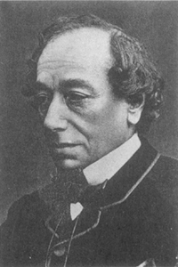

Benjamin Disraeli
Keolpolitik –güç hesapları ve ulusal çıkar üzerine dayanan dış politika– Almanya’nın birleşmesi sonucunu doğurdu. Almanya’nın birleşmesi ise, amaçlananın tam tersini yaparak Realpolitik’in kendi aleyhine dönüşmesine sebep oldu. Realpolitik uygulamasında, ancak uluslararası sistemin başlıca oyuncuları, ilişkileri, değişen şartlara göre ayarlamakta serbest olursa veya paylaşılan bir değerler sistemi tarafından engellenirse, yahut her ikisi bir arada olursa, silahlanma yarışından ve savaştan kaçınılır.
Birleşmeden sonra, Almanya kıtadaki en güçlü devlet oldu ve seneler geçtikçe daha da kuvvetleniyor ve böylece Avrupa diplomasisinde devrim yaratıyordu. Richelieu zamanında modern devlet sisteminin ortaya çıkmasıyla birlikte, Avrupa kıtasının kenarındaki devletler olan Büyük Britanya, Fransa ve Rusya, merkez üzerinde baskı yapmaya başladılar. Şimdi, ilk defa olarak Avrupa’nın merkezi kenarlara baskı yapabilecek kadar kuvvetlenmişti. Avrupa, tam göbeğindeki bu devletle nasıl baş edecekti?
Coğrafya, çözülmesi olanaksız olan bir çıkmaz yaratmıştı. Realpolitik’in geleneklerine göre, Almanya’nın büyüyen ve potansiyel olarak egemen gücünü sınırlamak için Avrupa koalisyonlarının kurulması olasıydı. Almanya, Avrupa’nın ortasında olduğu için, Bismarck’ın le cauchemar des coalitions dediği etrafını çevirmiş hasım koalisyonlar kâbusunun tehdidi altındaydı. Ama Almanya, doğu ve batıdaki bütün komşularının koalisyonuna karşı kendisini aynı anda korumaya çalışırsa, bu onları tek tek tehdit etmesi ve koalisyonların kurulmasını çabuklaştırması anlamına gelecekti. Kendi kendine gerçekleşen kehanetler, uluslararası sistemin bir parçası oldu. Halen Avrupa Konferansı denilen organizasyon, gerçekte iki grup düşmanlıkla bölünmüştü: Fransa ve Almanya arasındaki düşmanlık ile Avusturya-Macaristan ve Rusya imparatorluğu arasında gittikçe artan husumet.
Fransa ve Almanya’ya gelince, 1870 savaşındaki Prusya zaferinin büyüklüğü daimi olarak bir Fransız revanche arzusu doğurdu ve Alsace-Lorraine’nin Almanya’ya katılması da bu hoşnutsuzluğa çok hassas bir merkez sağladı. Bu hoşnutsuzluk, 1870-71 savaşının Fransız üstünlüğü döneminin sonunu işaretlediği gibi, güç ittifaklarında geri dönülmez bir değişiklik yarattığını Fransız liderlerine hissettirmeye başladı; korku da işin içine karıştı. Parçalanmış Orta Avrupa’da birtakım Alman devletlerini birbirine karşı kullanmak şeklindeki Richelieu sistemi, artık uygulanamaz olmuştu. Hatıraları ile ihtirasları arasında bocalayan Fransa, bu konudaki başarının stratejik realiteyi değiştirmeden yalnızca Fransızların gururunu tatmin edeceğini hiç düşünmeden Alsace-Lorraine’i yeniden kazanma tutkusu peşinde elli yıl koştu. Fransa artık kendi başına Almanya’yı kontrol altında tutacak kadar güçlü değildi; bu nedenle kendini savunmak için müttefiklere gereksinimi vardı. Aynı şekilde, Fransa, Almanya’nın düşmanı olan her devletin olası bir müttefiki olmak için daima hazır olmuş, böylece hem Alman diplomasisinin esnekliğini kısıtlamış, hem de Almanya’yı içeren krizleri şiddetlendirmiştir.
İkinci Avrupa bölünmesi olan Avusturya-Macaristan imparatorluğu ile Rusya arasındaki bölünme de Almanya’nın birleşmesinin bir sonucudur. Bismarck 1862’de başbakan (Ministerprasident) olunca, Avusturya büyükelçisinden, eski Kutsal Roma İmparatorluğu’nun merkezi olan Avusturya’nın ağırlık merkezini Viyana’dan Budapeşte’ye kaydırması gibi şaşırtıcı bir öneriyi İmparator’a iletmesini istedi. Büyükelçi bu düşünceyi o kadar akıl almaz buldu ki, Viyana’ya gönderdiği raporda bunu, Bismarck’ın sinir yorgunluğuna bağladı. Ancak Almanya’da üstünlük mücadelesinde bir kez yenilince, Avusturya’nın Bismarck’ın önerisi doğrultusunda hareket etmekten başka şansı kalmadı. Budapeşte, yeni yaratılan ikili krallıkta eşit, hatta kimi zaman üstün ortak oldu.
Almanya’dan atıldıktan sonra, yeni Avusturya-Macaristan İmparatorluğu’nun Balkanlar’dan başka genişleyecek yeri yoktu. Avusturya denizaşırı sömürgecilik işine girmediğinden, liderleri, yalnızca diğer büyük devletlerden geri kalmamak için bile olsa, Slav nüfusu ile Balkanlar’ın Avusturya’nın jeopolitik ihtirasları için doğal bir arena oluşturduğu görüşüne vardılar. Bu politikanın doğasında Rusya ile çatışma vardı.
Sağduyu, Balkan milliyetçiliğini kışkırtmakta dikkatli olunması, aksi takdirde Rusya’yı devamlı düşman olarak karşılarına almak tehlikesi doğacağı konusunda Avusturyalı liderleri uyarmış olmalıdır. Fakat sağduyu Viyana’da pek bol değildi; Budapeşte de ise, daha da az bulunuyordu. Saldırgan milliyetçilik üstün geldi. Viyana’daki kabine, kendisini Metternich’ten bu yana adım adım yalnızlığa götüren, ülke içinde atalet ve dış politikada da sinir krizleri yaratan tutumuna devam etti.
Almanya, Balkanlar’da kendisi için bir ulusal çıkar görmüyordu. Fakat Avusturya-Macaristan İmparatorluğu’nun devamını önemli bir çıkar olarak algılıyordu. Çünkü ikili krallığın çöküşü, Bismarck’ın bütün Alman politikasını bozma riskini taşıyordu, imparatorluğun Almanca konuşan Katolik kesimi, Almanya’ya katılmak isteyecek ve böylece Bismarck’ın azimle gerçekleştirmeye çalıştığı Protestan Prusya’nın üstünlüğünü tehlikeye sokacaktı. Üstelik Avusturya İmparatorluğu’nun dağılması, Almanya’yı güvenilir tek müttefikinden mahrum edecekti. Diğer taraftan, Bismarck, her ne kadar Avusturya’yı korumak istiyorsa da Rusya’ya meydan okumaya da niyeti yoktu. Bu, onlarca yıl herkesten saklamayı başardığı ama hiçbir zaman çözemediği bir bilmeceydi.
İşleri daha da kötüleştiren şey, Osmanlı İmparatorluğu’nun yavaş yavaş dağılma sancıları içine girmesi ve böylece Büyük Devletler arasında parçaların paylaşılması için sık sık çatışmalara neden olması idi. Bismarck’ın bir tarihte dediği gibi, beş oyunculu bir kombinezonda üçlü tarafta olmak her zaman arzu edilen bir şeydir. Fakat beş devletten –İngiltere, Fransa, Rusya, Avusturya ve Almanya– Fransa düşmanca davranıyordu; Büyük Britanya da “şahane yalnızlık” politikası dolayısıyla ortada yoktu ve Rusya Avusturya ile anlaşmazlığından dolayı kararsızdı. Bu yüzden Almanya’nın üçlü bir grup içinde Rusya ve Avusturya ile ittifak yapmaya gereksinimi vardı. Ancak Bismarck’ın iradesine ve becerisine sahip bir devlet adamı bu kadar tehlikeli bir denge hareketini başarı ile uygulayabilirdi. Böylece, Almanya ile Rusya arasındaki ilişki Avrupa barışı için kilit noktası oldu.
Rusya, uluslararası arenaya girer girmez, hayret edilecek bir çabuklukla egemen bir pozisyon elde etti. 1648 Vestfalya Barış Antlaşması’nda, Rusya, henüz temsil edilecek kadar önemli görülmemişti. Oysa 1750’den itibaren, Rusya her önemli Avrupa savaşına aktif olarak katılmıştır. XVIII. yüzyılın ortalarında, Rusya, artık Batılı gözlemcilerde belli belirsiz bir huzursuzluk yaratıyordu. 1762’de St. Petersburg’daki Fransız charge d’affaires (maslahatgüzar) raporunda şöyle diyordu:
“Rusya’nın ihtirası gemlenmezse, bunun etkileri komşu devletler için ölümcül olabilir... Rusya’nın gücünün toprak genişliği ile ölçülmemesi gerektiğini ve Doğu topraklarındaki egemenliğinin, gerçek kuvvet kaynağı olmayıp, heybetli bir hayalet olduğunu biliyorum. Fakat aynı zamanda doğal ikliminin sertliği nedeniyle mevsimlerin aşırılıklarına herkesten iyi karşı koyabilen, köle gibi itaate alışkın, yaşamak için çok az şeye ihtiyaç duyan ve bunun sayesinde çok az maliyetle savaş sürdürebilen bir ulus, korkarım ki fetihlerde de başarılı olabilir.”{173}
Viyana Kongresi’nin yapıldığı zaman, Rusya, kıta üzerinde belki en güçlü devletti. XX. yüzyılın ortalarında, dünyadaki iki süper devletin biri olma düzeyine yükseldi ve hemen hemen kırk yıl sonra da, iki yüzyıl içinde elde ettiği büyük kazançlarının çoğunu birkaç ay içinde kaybetti.
Çar’ın gücünün mutlak olması, Rus yöneticilerinin dış politikayı, keyfi ve kendi zevklerine göre yürütmelerini sağladı. Altı yıl içinde, 1756 ile 1762 yılları arasında Rusya Avusturya’nın yanında Yedi Yıl Savaşları’na katıldı ve Prusya’yı işgal etti, Ocak 1762’de İmparatoriçe Elizabeth’in ölümü üzerine Prusya tarafına geçti ve 1762’de Büyük Katerina’nın kocasını devirmesiyle tarafsızlığını ilan etti. Elli yıl sonra, Metternich, Çar I. Aleksandr’ın hiçbir fikrinin beş yıldan daha uzun ömürlü olmadığını söyledi. Metternich’in danışmanı Friedrich von Genz, Çar’ın durumunu şöyle açıkladı:
“Diğer hükümdarları sınırlayan, engelleyen hiçbir şey –bölünmüş otorite, anayasal prosedür, kamuoyu vs.– Rus imparatoru için söz konusu değildi. Akşam gördüğü rüyayı, sabahleyin uygulamaya kalkabilirdi.”{174}
Paradoks, Rusya’nın en belirgin özelliğiydi. Devamlı savaş ve her yönde genişleme halinde olan Rusya, yine de kendisini daimi bir tehdit altında hissediyordu, imparatorluk, giderek daha fazla sayıda dil konuşulan bir ülke haline geldikçe, Rusya da kendini o kadar çok tehlikede hissetmeye başladı. Bunun nedeni, kısmen kendi içindeki çeşitli milliyetleri komşularından uzak tutmak gereksinimiydi. Yönetimini korumak ve imparatorluğun çeşitli halkları arasında gerginliği kontrol altında tutmak için, bütün Rus yöneticileri, büyük bir yabancı tehlike miti yarattılar ki, bu da zamanla Avrupa’nın istikrarını mahveden kendi kendine gerçekleşen kehanetlerden birisine dönüştü.
Rusya, Moskova etrafındaki alandan, Avrupa’nın ortasına, Pasifik sahillerine ve Orta Asya’ya doğru genişledikçe, güvenlik arayışı da yayılmacılığa dönüştü. Rus tarihçisi Vasili Kliuchevsky süreci şöyle açıklıyor:
“Kaynak itibariyle... savunma amacına yönelik olan bu savaşlar, sonradan Moskova’daki politikacıların iradeleri dışında ve görünmez bir şekilde saldırı savaşına dönüştü: Eski (Romanov öncesi) hanedanın birleştirme politikasının doğrudan bir devamı; hiçbir zaman Moskova devletine ait olmamış Rus toprakları için mücadele.”{175}
Rusya, geniş kanatları çevresindeki komşularının egemenliklerini tehdit ettiği gibi, Avrupa güç dengesi için de yavaş yavaş bir tehdit oluşturmaya başladı. Ne kadar çok toprağı kontrolü altında tutarsa tutsun, Rusya karşı konulmaz bir şekilde sınırlarını dışarıya doğru zorluyordu. Bu, Prens Potemkin’in (Çariçe’nin geçeceği yollar üstüne sahte köyler yerleştirmekle meşhurdur) Rusya’nın topraklarını savunma olanağını geliştireceği gibi mantıklı bir sebeple 1776’da Kırım’ın Türkiye’den alınmasını savunmasıyla başladı.{176} Ancak 1864’te güvenlik terimi, artık devamlı yayılma ile aynı anlamda kullanılır oldu. Rusya’nın Orta Asya’daki genişlemesini, Başbakan Aleksandr Gorçakov, sürekli bir hareket halinde olan kanatlardaki hareketliliği gidermek için daimi olarak yapılması zorunlu bir hareket olarak tanımlamıştır:
“Rusya’nın Orta Asya’daki durumu, uygar devletlerin sağlam bir sosyal organizasyondan mahrum yarı vahşi göçebe kabilelerle temasa geçtiği zamanki durumuna benzemektedir. Bu gibi durumlarda, sınır güvenliği ve ticari ilişkiler, daha uygar olan devletin, komşuları üzerinde belirli bir otorite kurmasını gerektirir…
Bu sebeple devlet, bir seçim yapmalıdır: Ya bu devamlı gayretten vazgeçip sınırlarını devamlı huzursuzluk içinde olmaya terk edecek... veya vahşi toprakların kalbine doğru adım adım ilerleyecektir... ki burada en büyük zorluk, nerede duracağını bilmektir.”{177}
Birçok tarihçi Sovyetler Birliği, 1979’da Afganistan’ı işgal ettiği zaman bu pasajı hatırlamışlardır.
Paradoksal olarak şu da bir gerçektir ki, son iki yüzyıl içinde, Avrupa güç dengesi birkaç defa Rus çabaları ve kahramanlığı ile korunmuştur. Rusya olmasa idi, Napoleon ve Hitler hemen hemen kesin olarak evrensel imparatorluklarını kurmayı başarmış olacaklardı, iki ters yöne aynı anda bakan iki yüzü olan ilah Janus gibi, Rusya, aynı anda, hem güç dengesine bir tehdit oluşturma, hem de onun kilit durumundaki bir unsuru olan, denge için şart bir devlet olmuştur, fakat güç dengesinin tam olarak bir parçası olamamıştır. Tarihinin büyük kısmında Rusya yalnızca dış dünya tarafından kendine empoze edilen limitleri kabul etmiş, fakat bunu da dişlerini gıcırdatarak yapmıştır. Bununla beraber, özellikle Napoleon savaşlarının bitiminden sonraki kırk yıl gibi, Rusya’nın büyük gücünün avantajından yararlanmadığı, tam tersine bu gücünü Orta ve Batı Avrupa’da muhafazakâr değerlerin korunması için kullandığı dönemler de olmuştur.
Rusya, meşruiyetin savunucusu olduğu zamanlar bile, diğer muhafazakâr saraylardan çok daha fazla kurtarıcı olmuş ve dolaysıyla emperyalist bir tavır almıştır. Batı Avrupa muhafazakârları, kendi kendini sınırlama felsefeleriyle kendilerini tanımlarken, Rus liderleri büyük misyonlar için gönüllü olmuşlardır. Çarlar, meşruiyet diye bir sorun yaşamadıklarından, cumhuriyetçi hareketleri, ahlaksızlık olarak tanımlıyorlardı. Muhafazakâr değerlerin birliğini destekleyenler –hiç değilse Kırım Savaşı’na kadar– kendi nüfuz alanlarını genişletmek için meşruiyet prensibini kullanmaya da hazır idiler ve bu durum I. Nikola’ya “Avrupa’nın jandarması” lakabını kazandırdı. Kutsal İttifak’ın en itibarda olduğu zamanda, Friedrich von Gentz I. Aleksandr için şöyle yazıyordu:
“İmparator Aleksandr, Büyük ittifak için devamlı olarak gösterdiği şevk ve içtenliğe karşın, bu ittifak olmadan da en rahat hareket edebilecek olan hükümdardır... Çar için Büyük ittifak, ihtiraslarının ana hedeflerinden biri olan nüfuzunu mutat işlerde kullanırken başvurduğu bir aletten ibarettir... Sistemin korunmasına olan ilgisi, Avusturya, Prusya ve İngiltere için geçerli olan gereksinmeye veya korkuya dayanan bir ilgi değildir; başka bir sistem ona daha büyük avantaj sağladığı anda, kolayca reddedeceği serbest ve hesaplı bir ilgidir...”{178}
Amerikalılar gibi Ruslar da, kendi toplumlarını, istisnai bir toplum olarak görürler. Rusların, Orta Asya’daki yalnızca göçebe veya feodal toplumlarla karşılaşan yayılmacılığı, Amerika’nın batıya doğru genişlemesiyle birçok benzer özellik taşır ve yukarıda Gorçakov’un söylediği gibi, Rusların bu hareketleri açıklaması da, Amerikalıların manifest destiny doktrinine paralellik gösterir. Fakat Rusya Hindistan’a yaklaştıkça İngilizlerin kuşkusu da o oranda artmıştır ve bu durum, Amerika’nın batıya ilerlemesinin aksine, Rusya’nın Orta Asya’daki genişlemesi, XIX. yüzyılın ikinci yarısında bir dış politika sorununa dönüşmüştür.
Her iki ülkenin de sınırlarının açık olması, Amerika’nın ve Rusya’nın farklılıklarının çok az olan birkaç ortak özelliği arasındadır. Amerika’nın kendine özgü olma duygusu, özgürlük kavramına dayanıyordu. Rusya’nınki ise, birlikte acı çekme deneyiminden kaynaklanmıştır. Herkes Amerika’nın değerlerini paylaşmaya layıktı; Rusya’nınkiler ise, yalnızca Rus ulusuna mahsustu ve bu durum, Rus olmayan uyrukların çoğunu dışarıda bırakıyordu. Amerika’nın farklı olma inancı, onu, ara sıra moral misyonlar üstlenmekle birlikte, yalnızlığa itmiştir; Rusya’nınki ise onu sık sık askeri maceralarına götüren bir görev duygusu uyandırmıştır.
Rus milliyetçisi halkla ilişkiler uzmanı Mikhail Katkov, Batı ve Rus değerleri arasındaki farkı şöyle tanımlar:
“...Orada her şey sözleşmeden doğan ilişkilere, burada her şey inanca dayandırılır; bu zıtlık özünde Batı’da ve Doğu’da kilisenin tutumundan doğmuştur. Orada temel ikili otorite olduğu halde, burada tek bir otorite vardır.”{179}
Milliyetçi Rus ve Panislavist yazarlar ve entelektüeller, Rus ulusunun bilinen fedakârlığını, Ortodoks dinine olan bağlılığına yordular. Büyük romancı ve ateşli milliyetçi Fyodor Dostoyevski, Rus fedakârlığını, Slav halklarının gerekirse bütün Batı Avrupa’ya karşı koyarak yabancı yönetimden kurtarılması için bir zorunluluk olarak görmüştür. Rusya’nın Balkanlar’daki 1877 savaşı sırasında Dostoyevski şöyle yazıyordu:
“Halka sorun; askere sorun; niçin ayağa kalkıyorlar, niçin savaşa gidiyorlar ve savaştan ne bekliyorlar? Size, sanki tek bir kişi imiş gibi, İsa’ya hizmet etmek için ve zulüm altında olan kardeşlerini kurtarmak için olduğunu söyleyeceklerdir... Bütün Avrupa’yı karşımıza alsak bile (biz), onların ortak uyum içinde hareket etmelerini sağlayacağız ve özgürlüklerini ve bağımsızlıklarını koruyacağız.”{180}
Aynı anda hem hayranlık beslediği, hem küçük gördüğü, hem de kuşkulandığı Batı Avrupa devletlerinden farklı olarak Rusya, kendisini bir ulus olarak değil, jeopolitiğin ötesinde bir inançla hareket eden ve silahlarla bir arada tutulan bir olay olarak görmüştür. Dostoyevski Rusya’nın rolünü yalnız Slav ırkdaşlarını kurtarmak ve onların uyum içinde yaşamalarını izlemekle sınırlamamıştır. Bu, kolaylıkla egemenlik altına almaya dönüşebilecek bir sosyal yükümlülüktür. Katkov’a göre, Rusya Üçüncü Roma’dır:
“Rus çarı, atalarının varisi olmanın ötesindedir; Doğu Roma Sezarlarının, Hıristiyan inancının temellerini kuran kilise ve kilise konseyleri örgütleyicilerinin halefidir. Bizans’ın düşüşüyle birlikte Moskova yükseldi ve Rusya’nın büyüklüğü başladı.”{181}
Devrimden sonra, bu ateşli görev duygusu Komünist Enternasyonal’e aktarıldı.
Rusya tarihinin paradoksu, görev duygusundan doğan itici güç ile yaygın güvensizlik duygusu arasında devam eden kararsızlıktır. En uç noktasında, bu kararsızlık, eğer genişlemezse imparatorluğun dağılacağı korkusu yarattı. Bu suretle, Rusya Polonya’nın bölünmesinde en önemli devlet olarak harekete geçtiğinde, kısmen güvenlik kısmen de XVIII. yüzyıl tarzı büyüme sebepleriyle böyle yapmıştır. Yüzyıl sonra bu fetih ayrı bir önem kazandı. 1869’da, Panislavist bir subay olan Rostislav Andreyeviç Fadeyev “Doğu Sorunu Üzerine Görüşler” adlı önemli bir araştırmasında, Rusya’nın mevcut fetihlerini korumak için Batı’ya doğru yürüyüşüne devam etmesi gerektiğini yazdı:
“Rusya’nın Dinyeper’den Vistül’e kadar olan tarihi ilerlemesi (Polonya’nın bölüşülmesi), kıtanın kendisine ait olmayan bir bölgesine girdiği için Avrupa’ya savaş ilanı demekti. Rusya şimdi düşman hatlarının ortasındadır. Bu durum geçicidir; ya düşmanı geri püskürtmesi, ya da bulunduğu yeri terk etmesi gerekmektedir... ya üstünlüğünü Adriyatik’e kadar uzatması veya tekrar Dinyeper’in gerisine çekilmesi gerekiyor...”{182}
Fadeyev’in analizi, George Kennan’ın, hattın diğer tarafından yapılmış olan Sovyet hareketlerinin kaynakları konusundaki yeni ufuklar açan yazısındaki analizinden pek farklı değildir. Bu yazıda Kennan, Sovyetler Birliği’nin, gerileme politikasında başarılı olamaması halinde, duraklayacağı ve çökeceği kehanetinde bulunmuştur.{183}
Rusya’nın kendi hakkındaki abartmalı görüşü, dış dünya tarafından seyrek olarak paylaşılmıştır. Edebiyat ve müzikteki olağanüstü başarılarına karşın, Rusya, diğer sömürgeci imparatorlukların bazılarının ana ülkelerinin yaptıkları gibi, ele geçirdiği yerlerin halkları için bir kültürel mıknatıs görevini hiçbir zaman yapamamıştır. Bunun gibi, Rusya imparatorluğu, ne başka topluluklar tarafından, ne de kendi vatandaşları arasında bir örnek olarak algılanmıştır. Dış dünya için, Rusya temel ve basit bir güçtür; esrarengiz, işbirliği veya çatışma yoluyla sınırlandırılması gereken, korkulası bir yayılmacı güçtür.
Metternich işbirliği yolunu denedi ve bir kuşak boyunca büyük ölçüde başarılı oldu. Fakat Almanya ve İtalya’nın birliklerini sağlamalarından sonra, XIX. yüzyılın ilk yarışının büyük ideolojik davaları, birleştirici gücünü kaybetti. Milliyetçilik ve devrimci cumhuriyetçilik, artık Avrupa düzenine karşı bir tehdit olarak algılanmıyordu. Milliyetçilik, egemen örgütlenme ilkesi halini aldıkça, Rusya, Prusya ve Avusturya’nın taçlı başları, meşruiyeti birlikte savunmak için bir araya gelmeye gittikçe daha az ihtiyaç duydular.
Metternich, Avrupa hükümetine yakın bir düzen kurmakta başarılı oldu; çünkü Avrupa yöneticileri, kendi ideolojik birliklerini devrime karşı zorunlu bir dalgakıran olarak düşündüler. Fakat 1870’lere kadar, ya devrim korkusu azaldı veya çeşitli hükümetler, dış yardım almadan da bu gibi hareketleri bastırabilecekleri inancına vardılar. Artık XVI. Louis’nin idamından beri iki kuşak geçmiş, 1848 liberal devrimlerinin iyice üstesinden gelinmişti; Fransa ise, her ne kadar bir cumhuriyet ise de, eski devrimci heyecanını kaybetmişti. Artık Rusya ve Avusturya arasında Balkanlar için veya Almanya ve Fransa arasında Alsace-Lorraine için gittikçe keskinleşen çatışmayı sınırlayacak hiçbir ortak ideolojik bağ yoktu. Büyük devletler, birbirlerine, ortak bir davanın tarafları gözü ile değil, tehlikeli, hatta ölümcül birer rakip olarak bakıyorlardı. Meydan okuma, standart diplomatik metot olarak ortaya çıktı.
Daha önceki dönemde, Büyük Britanya Avrupa düzeninin dengeleyicisi olarak hareket etmek suretiyle sınırlayıcı rol oynadı. O zamanda, başlıca Avrupa ülkeleri içinde yalnızca Büyük Britanya başka bir devletle yaşadığı uzlaşmaz bir düşmanlıkla sınırlanmadan, güç dengesi diplomasisini uygulayabilecek bir konumdaydı. Fakat Büyük Britanya’nın kafası, neyin asıl tehdidi oluşturduğu konusunda giderek daha çok karıştı ve onlarca yıl belli bir tavır benimseyemedi.
İngiltere’nin alışık olduğu Viyana sisteminin güç dengesi, kökten değiştirilmişti. Birleşmiş Almanya, kendi başına bütün Avrupa’ya egemen olacak güce ulaşıyordu. Büyük Britanya, geçmişte böyle bir durum toprak işgali ile gerçekleştirildiği zaman bunun her zaman karşısında olmuştu. Ancak Disraeli hariç, birçok İngiliz lider, Orta Avrupa’da ulusal birlik sürecine karşı olmak için sebep görmemişlerdir. Hatta İngiliz devlet adamları, bu olayın, özellikle de Fransa’nın teknik olarak saldırgan kabul edildiği bir savaş sonucunda gerçekleşmesini memnunlukla karşılamışlardır.
Canning, Büyük Britanya’yı, Metternich sisteminden kırk yıl önce uzaklaştırdığından beri, İngiltere’nin şahane yalnızlık politikası, büyük ölçüde kıtada hiçbir ülke tek başına egemen olamadığı için bu ülkenin, dengenin koruyucusu rolünü oynamasını sağladı. Almanya birliğini sağladıktan sonra, bu kapasiteyi adım adım elde etti. İnsanın kafasını karıştıran bir şekilde, bu sonucu fetih olmadan kendi ulusal topraklarını genişleterek sağladı. Büyük Britanya’nın hareket tarzı, güç dengesine fiilen saldırıldığı zaman müdahale etmek şeklinde idi; yoksa bir saldırı ihtimali onu etkilemiyordu. Almanya’nın Avrupa dengesine yönelttiği tehdidin belirginleşmesi onlarca yıl aldığı için, Büyük Britanya’nın dış politikası yüzyılın geri kalan kısmında Fransa üzerinde odaklaştı. Fransa’nın sömürgeci arzuları, İngiltere’ninki ile özellikle de Mısır’da çatıştı. Rusya’nın Boğazlar’a, İran’a, Hindistan’a ve daha sonra Çin’e doğru ilerlemesi de İngiliz dış politikası ile çatıştı. Bütün bunlar sömürgecilik sorunları idi. Aynı ülke, XX. yüzyılın kriz ve savaşlarını çıkaran Avrupa diplomasisinde ise, şahane yalnızlık politikasını uygulamaya devam etti.
Bismarck, 1890’da görevinden alınana kadar Avrupa diplomasisinin en nüfuzlu şahsiyeti idi. Onun istediği, yeni doğmuş olan Alman imparatorluğu için barış idi ve hiçbir devletle anlaşmazlık içinde olmak istemiyordu. Fakat Avrupa devletleri arasında moral bir bağ olmamasından dolayı karşı karşıya bulunduğu iş, olağanüstü zor bir işti. Rusya ve Avusturya’yı, Fransız düşman kampından uzak tutmak zorunda idi. Bunun için, Avusturya’nın meşru Rus amaçlarına karşı koyması, Rusya’nın Avusturya-Macaristan İmparatorluğu’nun altını oyması ve İstanbul ve Hindistan hakkındaki niyetlerinden dolayı Rusya’ya şüphe ile bakan Büyük Britanya’nın düşmanlığını üzerine çekmeden Rusya ile iyi ilişkiler içinde olması gerekiyordu. Bismarck gibi bir dehanın bile böyle hassas bir denge hareketini sonsuza kadar devam ettirmesi olanaksızdı. Uluslararası sistem üzerindeki baskılar gittikçe baş edilmez bir şekilde şiddetleniyordu. Bununla beraber Almanya’yı yönettiği hemen hemen yirmi yıl boyunca Bismarck Realpolitik’i o kadar ılımlı ve ustaca uyguladı ki, güç dengesi hiçbir zaman bozulmadı.
Bismarck’ın amacı, –uzlaşmaz Fransa hariç– hiçbir devletin eline, Almanya’ya karşı herhangi bir ittifaka girmek için bir bahane vermemekti. Birleşmiş Almanya’nın “doymuş” olduğunu, artık toprakta gözü olmadığını açıkça söyleyen Bismarck, Almanya’nın Balkanlar’da gözü olmadığına Rusya’yı da inandırmaya çalıştı; Balkanlar’ın, Pomeranya’lı bir erin kemikleri kadar değeri olmadığını söyledi. Büyük Britanya’yı aklında tutan Bismarck, kıta üzerinde denge için İngiltere’yi harekete geçirecek bir tehlike oluşturmadı ve Almanya’yı sömürgecilik yarışı dışında tuttu. Alman sömürgeciliğini savunan birisine verdiği cevapta şöyle dedi: “Rusya burada, Fransa burada ve biz de ortadayız. Benim Afrika haritam budur.”{184} Bu, Bismarck’ın daha sonra iç politikanın zorlamasıyla değiştirmek zorunda kalacağı bir öneri idi.
Ancak güvence vermek yeterli değildi. Almanya’nın gereksinimi olan şey, ilk bakışta olanaksız gibi görünen bir iş olan Rusya ve Avusturya ile ittifak yapmaktı. Yine de Bismarck 1873’te böyle bir ittifakı yapmayı başardı: Birinci Üç imparatorlar Ligi denilen ittifak. Üç muhafazakâr sarayın birliğini ilan eden bu ittifak, Metternich’in Kutsal İttifak’ına çok benziyordu. Bismarck şimdiye kadar yıkmaya çalıştığı Metternich sistemine karşı birdenbire bir sevgi mi geliştirmişti? Bismarck’ın başarıları sonucunda zaman çok değişmişti. Her ne kadar Almanya, Rusya ve Avusturya, her birinin ülkelerindeki ayaklanma eğilimlerini bastırmak için işbirliği yapmak hususunda gerçek Metternich usulünde birbirlerine söz vermişlerse de, radikal politikalara karşı beslenen ortak nefret, doğu saraylarını daha uzun müddet bir arada tutamazdı. En önemlisi, her biri, iç ayaklanmaları, dış yardım almadan bastırabileceklerine inanıyorlardı.
Bundan başka, Bismarck sağlam meşrutiyetçi niteliklerini de kaybetmişti. Her ne kadar Gerlach’a yazışmaları (Bak. Bölüm 5) kamuoyuna açıklanmamış ise de, temel hareket tarzı, herkesin bilgisi dâhilindeydi. Bütün siyasi kariyeri boyunca Realpolitik’in bir savunucusu olan Bismarck, meşruiyete olan bağlılığına kimseyi inandıramazdı. Rusya ile Avusturya arasında gittikçe şiddetlenen jeopolitik rekabet, muhafazakârlar birliğinin önüne geçmeye başladı, ikisi de çürümekte olan Türk İmparatorluğu’nun Balkan toprakları peşindeydi. Panslavizm ve eski moda yayılmacılık, Rusya’nın Balkanlar’daki maceracı politikasına katkıda bulunuyordu. Korku, Avusturya-Macaristan İmparatorluğu’nda paralel davranışlar yaratıyordu. Böylece, her ne kadar kâğıt üzerinde Alman imparatoru, Rusya ve Avusturya’daki muhafazakâr krallarla ittifak halinde görünüyorsa da, bu iki devlet gerçekte birbirlerinin boğazına sarılmış durumda idiler. Birbirlerini ölümcül bir tehdit olarak gören iki ortağı idare etme sorunu, Bismarck’ın geri kalan günlerinde ittifak sistemini rahatsız etmeye devam edecekti.
Birinci Üç İmparatorlar Ligi, Bismarck’a serbest bıraktığı güçleri artık Avusturya ve Rusya’nın iç ilkelerine hitap ederek kontrol edemeyeceğini gösterdi. O halde bundan böyle, bu güçleri kuvvet ve kendi çıkarları üzerinde durarak yönlendirmeye çalışacaktı.
İki olay, başka her şeyden daha çok Realpolitik’in, dönemin geçerli eğilimi olduğunu gösterdi, ilki, 1875’te önemli bir Alman gazetesinin başmakalesine atılan “Savaş kaçınılmaz mı?” şeklindeki kışkırtıcı bir başlıkla düzenlenmiş bir savaş korkusu biçiminde bir sözde-kriz olarak ortaya çıktı. Başyazı, artan Fransız askeri harcamaları ve Fransız askeri kuvvetleri tarafından çok sayıda at satın alınmasına bir tepki olarak yazılmıştı. Bu savaş korkusunu, daha ileri gitme niyeti olmadan Bismarck yaratmak istemiş olabilir. Çünkü herhangi bir Alman seferberliği veya tehdit edici askeri birlik kaydırmaları yoktu.
Bir ulusun moralini yükseltmek için mevcut olmayan bir tehdidi ortadan kaldırmaktan daha kolay bir yol yoktur. Akıllı Fransız diplomasisi, Almanya’nın bir önleyici saldırı planladığı izlenimini yarattı. Fransız Dışişleri Bakanlığı Fransız büyükelçisi ile bir konuşmada, Çar’ın, bir Fransız-Alman anlaşmazlığında, Fransa’yı destekleyeceği işareti verdiği haberini yaydı. Tek bir devletin Avrupa’ya egemen olması tehdidine karşı daima duyarlı olan Büyük Britanya yeniden kımıldamaya başladı. Başbakan Disraeli, Dışişleri Bakanı Lord Derby’den Rus Başbakanı Gorçakov ile görüşülerek Berlin’e bir gözdağı verilmesini istedi:
“Benim kendi izlenimim şu ki, Pam’ın (Lord Palmerston) Fransa’yı şaşırtıp Mısırlıları Suriye’den çıkardığı zaman yaptığı gibi, Avrupa barışını korumak için bizim birlikte bazı eylemler yapmamız gerekmektedir. Rusya ile bizim aramızda bu belirli amaç için bir ittifak olabilir ve Avusturya gibi ve belki İtalya gibi diğer ülkeler katılmaya davet edilebilir...”{185}
Rusya’ya, imparatorluk ihtiraslarından dolayı hiçbir zaman güvenmeyen Dis-raeli’nin, bir Anglo-Rus ittifakını düşünmesi bile, Almanya’nın Batı Avrupa’da egemen olma ihtimalini ne kadar ciddiye aldığını göstermektedir. Savaş korkusu, parladığı gibi hızla yatıştı. Böylece Disraeli’nin planı hiçbir zaman denenemedi. Her ne kadar Bismarck, Disraeli’nin manevralarının ayrıntılarını bilmiyor idiyse de, Britanya’nın endişesini hissedecek kadar akıllı bir adamdı.
George Kennan’m gösterdiği gibi{186}, bu kriz kamuoyunda gösterildiği kadar ileri gitmemişti. Bismarck’ın Fransa’yı aşağıladıktan sonra bir savaşa gitmeye niyeti yoktu; fakat Fransa’ya, çok sıkıştırılırsa, bunu yapabileceği izlenimini vermekte bir sakınca görmedi. Çar II. Aleksandr cumhuriyetçi Fransa’ya güvence vermek niyetinde değildi, ama Bismarck’a bu seçeneğin mevcut olduğu haberini gönderdi.{187} Yani Disraeli henüz sadece bir kuruntu olan bir olasılığa karşı tepki gösteriyordu, İngilizlerin rahatsızlığı, Fransızların manevraları ve Rusya’nın kararsızlığı karşısında, Bismarck, sadece aktif bir politikanın, bir kuşak sonra Almanya’yı hedef alan Üçlü Antant’a doğru giden koalisyon hareketini önleyebileceğine inandı. Bismarck’ın korktuğu şey, bir kuşak sonra, Almanya’yı hedef alan Üçlü Antant’la gerçekleşti.
İkinci kriz, yeter derecede gerçekti ve bir başka Balkan krizi şeklinde ortaya çıktı. Bu da gösterdi ki, ulusal çıkarların çatışması karşısında, ne felsefi ne de ideolojik bağlar Üç İmparatorlar Ligi’ni bir arada tutabilir. Çünkü bu bunalım, Bismarck’ın Avrupa düzenini yıkan ve Avrupa’yı, Birinci Dünya Savaşı içine atan çatışmayı açıkça ortaya koydu. Bu konu burada biraz ayrıntılı bir biçimde incelenecektir.
Kırım Savaşı’ndan beri uykuda olan Doğu Sorunu, çapraşık anlaşmazlık konusu sorunlar arasında tekrar uluslararası gündeme egemen olmaya başladı. Yüzyıl ilerledikçe bu sorun, Japonların, Kabuki oyunu kadar basmakalıp bir hale geldi: Tesadüfi bir olay bir kriz başlatabilir; Rusya tehditler savurur ve Büyük Britanya, Kraliyet Donanması’nı gönderebilirdi. Sonra Rusya, Balkanlar’daki Osmanlı topraklarının bir bölümünü rehin olarak işgal eder, Büyük Britanya savaş tehdidinde bulunurdu. Tam iplerin kopacağı hassas noktada Rusya isteklerini azaltırdı.
1876’da, yüzyıllarca Türk yönetimi altında yaşayan Bulgarlar isyan ettiler ve diğer Balkan ulusları da bu isyana katıldılar. Türkiye, bu ayaklanmaya cevap verdi ve Panslavist duygularla sarsılan Rusya, müdahale tehdidinde bulundu.
Rusya’nın cevabı, Londra’da çok iyi bilinen Rusya’nın Boğazlar’ı kontrol etmesi kâbusunu tekrar canlandırdı. Canning’den beri İngiliz devlet adamları, Rusya’nın Boğazlar’ı kontrol altına almasının, Doğu Akdeniz ve Yakındoğu’yu da egemenliği altına alması ve Büyük Britanya’nın Mısır’daki pozisyonunu tehdit etmesi anlamına geldiğini kabul etmişlerdi. Dolayısıyla İngiltere’nin geleneksel düşünce biçimine göre, Osmanlı imparatorluğu, yönetimi ne kadar eskimiş ve davranışı ne kadar merhametsizce olursa olsun, Rusya ile savaşa girme riskine rağmen, korunmalıydı.
Bu durum, Bismarck’ı ciddi bir çıkmazla karşı karşıya getirdi, İngilizlerin askeri reaksiyonunu davet edebilecek bir Rus ilerlemesi, Avusturya’nın da ayaklanarak kavgaya karışması sonucunu verebilirdi. Almanya, Avusturya ile Rusya arasında bir seçim yapmaya mecbur bırakılırsa, Bismarck’ın dış politikası da, Üç İmparatorlar Ligi ile beraber yıkılacaktı. Bismarck eğer tarafsız kalma yolunu seçerse, Avusturya’nın veya Rusya’nın düşmanlığını tahrik etmek, ya da her iki tarafın da nefretine hedef olmak durumuyla karşı karşıya kalacaktı. Bismarck, 1878’de Reichstag’da şunu söyledi:
“Avusturya ile Rusya arasında görüş ayrılığı olduğunda, biz bir tarafı tutarak bire karşı iki çoğunluğunu kurmaktan daima kaçınmışızdır...”{188}
Ilımlı hareket etmek klasik Bismarck davranış şekli ise de, kriz genişleyince büyük bir çıkmaz ortaya çıktı. Bismarck’ın ilk hareketi, ortak bir tavır oluşturarak, Üç İmparatorlar Ligi’nin bağlarını sağlamlaştırmaya girişmek oldu. 1876’nın ilk aylarında, Üç imparatorlar Ligi Berlin Memorandumu ile Türkiye’yi, devam eden isyanı bastırma şekli hakkında uyardı. Öyle görünüyordu ki, Metternich’in Verona, Laibach ve Troppau Kongreleri’nin kararlarını uygulamak için bir çeşit güç oluşturması gibi, Rusya da Avrupa Konferansı adına Balkanlar’a müdahale edebilecekti.
Fakat o zaman bu tavrı almakla, şimdi aynı şeyi yapmak arasında çok büyük fark vardı. Metternich’in zamanında, Castlereagh İngiliz dışişleri bakanı idi ve her ne kadar Büyük Britanya katılmayı reddetti ise de, Kutsal ittifak tarafından müdahalede bulunulmasına Castlereagh sempati ile bakıyordu. Fakat şimdi Disraeli başbakandı ve Berlin Memorandumu’nu, Osmanlı İmparatorluğu’nun, Büyük Britanya dışarıda tutularak parçalanmasının ilk adımı olarak yorumladı. Bu, Büyük Britanya’nın yüzyıllar boyunca karşı koyduğu Avrupa hegemonyasına çok yakın bir durumdu. Londra’daki Rus Büyükelçisi Şuvalov’a yakınan Disraeli şöyle dedi: “İngiltere, sanki Karadağ veya Bosna’ymış gibi muamele gördü...”{189} Leydi Bradford’a yazdığı mektuplardan birinde şöyle diyordu:
“Denge yok ve biz yolumuzdan çıkıp üç Kuzey Devleti ile birlikte hareket etmezsek onlar bizsiz hareket edecekler ki, bu durum, İngiltere gibi bir devlet için kabul edilebilir bir şey değildir.”{190}
St. Petersburg, Berlin ve Viyana tarafından sergilenen birlik sonucu, ne üzerinde anlaşmaya varmış olurlarsa olsunlar, Büyük Britanya’nın buna karşı direnmesi son derece güçtü. Disraeli’nin, Rusya Türkiye’ye saldırırken, Kuzey Sarayları’na katılmaktan başka seçeneği yoktu.
Ancak Palmerston geleneğine uygun olarak, Disraeli İngiltere’nin pazılarını göstermeye karar verdi. Kraliyet Donanması’nı Akdeniz’e gönderdi ve Türkiye lehine olan duygularını ilan etti. Bu da Türkiye’nin katı davranmasını kesinleştirdi ve Üç İmparatorlar Ligi içindeki görünmeyen farklılıkları açığa çıkardı. Tevazu sahibi olmakla tanınan Disraeli, Kraliçe Victoria’ya, Üç İmparatorlar Ligi’ni yıktığını açıkladı. Disraeli’ye göre, Üç imparatorlar Ligi “Roma Triumvirası kadar tükenmişti.”{191}
Benjamin Disraeli, İngiliz hükümetine başbakanlık eden en alışılmamış ve en olağanüstü şahsiyetlerden birisiydi. 1868’de başbakan atanacağını öğrenince coşkuyla şöyle haykırmıştır: “Hurra! Hurra! Sonunda yağlı direğin tepesine tırmandım!” Buna karşılık Disraeli’nin daimi hasmı William Ewart Gladstone, Disraeli’nin yerine geçmek üzere davet edildiği zaman, gücün sorumluluklarından ve Tanrı’ya olan kutsal görevlerinden –ki bunların içinde başbakanlığın ciddi sorumluluklarını taşıyabilmek için Tanrı’nın kendisine yeterli gücü vermesini isteyen bir dua da vardı– bahseden uzun bir yazı yazdı.
XIX. yüzyılın ikinci yarısında İngiliz politikasına egemen olan bu iki büyük adamın karakterleri, birbirlerine tamamen zıttı: Disraeli, frapan giyimli, parlak ve kurnazdı; Gladstone ise bilgili, dindar ve cesurdu. Kırsal toprak sahipleri ile sadık Anglikan aristokrat ailelerden oluşan Victoria dönemi Muhafazakâr Parti’sinin, lideri olarak bu parlak Yahudi maceracıyı seçmesi, az şaşılacak şey değildir, İngiliz politika hayatında hiçbir Yahudi, bu kadar yüksek bir mevkie gelmemişti. Bir yüzyıl sonra, Büyük Britanya’nın ilk kadın başbakanı ve bir başka olağanüstü lider olduğunu gösteren, bir manavın kızı olan Margaret Thatcher’ı başbakanlık makamına getiren de yine görünüşte ilerici olan İşçi Partisi değil, görünüşte dar görüşlü olan Muhafazakâr Parti olacaktır.
Disraeli’nin kariyerinin politika ile uzaktan yakından ilgisi yoktu. Gençliğinde romancı olan Disraeli, bir politika üreticisi olmaktan çok literati’nin bir üyesiydi ve hayatını parlak bir yazar ve konuşmacı olarak noktalama olasılığı, XIX. yüzyılın çığır açan bir İngiliz siyasi şahsiyeti olarak noktalaması olasılığından daha çoktu. Bismarck gibi o da oy verme hakkının sıradan insana kadar yayılması gerektiğine ve İngiltere’de orta sınıfın muhafazakârlara oy vereceğine inanmıştı.
Muhafazakârların lideri olarak Disraeli, Büyük Britanya’nın XVII. yüzyıldan beri uygulayageldiği ticari yayılmacılıktan tamamen farklı, yeni bir emperyalizm şekli geliştirdi, İngiltere’nin bu ticari yayılmacılık politikası ile, bir dalgınlık krizi esnasında bir imparatorluk kurduğu söylenirdi. Disraeli için, imparatorluk ekonomik değil duygusal bir gereksinim idi ve ülkesinin büyüklüğü için bir ön şarttı. Meşhur 1872 Crystal Palace konuşmasında şunu söyledi:
“Sorun, önemsiz bir sorun değildir. Sorun sizin, kıta prensiplerine göre yoğrulmuş ve zaman içinde kaçınılmaz kaderi ile karşılaşacak rahat bir İngiltere mi, yoksa büyük bir ülke, bir imparatorluk, evlatları üstün yerlere yükselen ve yalnız kendi vatandaşlarının takdirini değil, bütün dünyanın saygısını kazanan bir ülke mi olmak istemeniz sorunudur.”{192}
Bu gibi inançlara bağlı olan Disraeli, Rusya’nın Osmanlı İmparatorluğu’na yönelttiği tehdide karşı koymak zorundaydı. Avrupa dengesi adına Üç İmparatorlar Ligi’nin reçetelerini kabul edemezdi ve İngiliz imparatorluğu adına İstanbul’a yaklaşma konusundaki Avrupa konsensüsünün uygulayıcısı olarak Rusya’ya karşı koyacaktı. XIX. yüzyıl içinde, Rusya’nın, Büyük Britanya’nın dünyadaki konumuna karşı başlıca tehdidi oluşturduğu inancı iyice kuvvetlendi. Büyük Britanya’nın denizaşırı çıkarlarının, Rusya’nın bir kıskaç hareketinin tehdidi altında olduğunu algıladı; kıskacın bir ucu İstanbul’a, diğer ucu da Orta Asya kanalı ile Hindistan’a yönlendirilmişti. Orta Asya’da XIX. yüzyılın ikinci yarısındaki genişlemesi sırasında, Rusya, sonradan mutat olan toprak elde etme metotları geliştirdi. Kurban her zaman dünya işlerinin merkezinden o kadar uzaktaydı ki, ancak birkaç Batılının oralarda ne olup-bittiği hakkında kesin bir fikri vardı. Böylece Batılılar, gerçekte Çar’ın kendisinin iyi, yardımcılarının kavgacı olduğu şeklindeki önyargılarına geri dönüp, uzaklık ve karışıklığı, Rus diplomasisinin araçları haline dönüştürdüler.
Avrupa devletleri içinde, yalnızca Büyük Britanya Orta Asya ile ilgilenmişti. Rus yayılmacılığı Hindistan yönünde Güneye yöneldikçe, Londra’nın protestoları, genellikle Rus ordularının ne yaptığını bilmeyen Başbakan Prens Aleksander Gorçakov tarafından oyalandı, İngiltere’nin St. Petersburg’daki büyükelçisi Lord Agustus Loftus “Hindistan üzerindeki Rus baskısının, mutlak bir hükümdar olan kraldan kaynaklanmadığını, askeri yönetiminden geldiğini” düşünüyordu. “Çok büyük bir ordu hazır halde bekletilirse, ona iş bulmak da kesinlikle gereklidir... Orta Asya’da olduğu gibi bir fetih sistemi kurulduğu zaman, bir toprak işgali diğerini izler, zorluk nerede durulacağını bilmektir.”{193} Bu gözlem kuşkusuz Gorçakov’un kendi sözlerinin bir tekrarıdır. Diğer taraftan, İngiliz kabinesi, Rusya’nın Hindistan’ı olayların ivmesiyle mi, yoksa açık bir emperyalizmle mi tehdit ettiğine hiç aldırış etmedi.
Aynı model defalarca tekrarlandı. Her yıl, Rus birlikleri Orta Asya’nın kalbine doğru daha da derinlemesine giriyordu. Büyük Britanya bir açıklama istiyor ve Çar’ın o toprakların bir metrekaresini bile ilhak etmek niyetinde olmadığı konusunda güvence alınıyordu, ilk önceleri, bu şekildeki yatıştırıcı sözler konuyu kapatabiliyordu. Fakat bir başka, Rus ilerlemesi kaçınılmaz olarak sorunu tekrar su yüzüne çıkarıyordu. Örneğin Mayıs 1868’de Rus ordusu Semerkant’ı işgal edince, Gorçakov İngiliz Büyükelçisi Sir Andrew Buchanan’a şöyle dedi: “Rus hükümeti, şehri işgal etmek istemediği gibi, bundan üzüntü duymaktadır. Şehrin devamlı olarak elde tutulmayacağından emin olabilirsiniz.”{194} Tabii ki Semerkant, bir yüzyıldan daha uzun bir süre sonra, Sovyetler Birliği’nin çöküşüne kadar Rus egemenliği altında kalmıştır.
1872’de aynı oyun, birkaç yüz mil Güneydoğuya doğru ilerlenerek bugünkü Afganistan sınırında olan Khiva prensliği için tekrarlandı. Çar’ın emir subayı Kont Şuvalov Londra’ya gönderilerek Rusya’nın Orta Asya’da ek toprak ilhak etmek niyetinde olmadığı teminatı verildi:
“İmparator’un Khiva’yı alma niyeti olmadığı gibi, böyle bir şeyi önlemek için ve getirilen koşulların Khiva’nın uzatılmış bir işgaline dönüşmemesi için gerekli emirler verilmiştir.”{195}
Bu teminat henüz verilmişti ki, Rus Generali Kaufman Khiva’yı yerle bir etti ve Şuvalov’un teminatlarının tam aksini içeren bir antlaşma empoze etti.
1875’te, aynı metot Afganistan sınırında başka bir prenslik olan Kokand’a uygulandı. Bu olayda, Başbakan Gorçakov Rusya’nın verdiği teminatlar ile fiilleri arasındaki farkı açıklamak zorunluluğunu duydu. Dâhiyane bir şekilde, tek-taraflı teminatlar (Gorçakov’un tanımına göre bağlayıcı gücü yoktu) ile resmi, iki-taraflı antlaşmalar arasında daha önce benzeri olmayan bir fark icat etti. Bir yazısında şöyle diyordu:
“Londra’daki Kabine, bizim Orta Asya’daki birkaç olayda, kendi isteğimizle ve dostane bir şekilde kendilerine görüşlerimizi bildirmemizden ve özellikle de fetih veya toprak ilhakı politikası gütmeyeceğimiz hakkındaki kesin kararımızdan, bizim bu konuda onlara karşı kesin yükümlülükler üstlendiğimiz sonucunu çıkarmış görünmektedir.”{196}
Diğer bir deyişle, Rusya yine Orta Asya’da serbest olacak, kendi sınırlarını yine kendisi belirleyecek ve verdiği teminatlarla bile bağlı olmayacaktı.
Disraeli, İstanbul konusunda bu metodun tekrar kullanılmasına izin vermeyecekti. Osmanlı Türklerine, Berlin Memorandumu’nu reddetmeleri ve Balkanlar’daki isyan bastırma işine devam etmeleri konusunda cesaret verdi, İngilizlerin bu kararlılık gösterisine rağmen Disraeli iç politikada ciddi bir baskı altındaydı. Türklerin direnmesi İngiliz kamuoyunu onların aleyhine çevirmişti ve Gladstone, Disraeli’nin dış politikasının ahlak dışılığına karşı ağzına geleni söylüyordu. Disraeli bunun üzerine, Türklerin Balkanlar’da savaşa son vermesini ve bölgedeki yönetim biçiminde reform yapmasını isteyen Kuzey Sarayları’na katıldığı 1877 Londra Protokolü’nü imzalamak zorunda kaldı. Ancak resmi istekler ne olursa olsun, Disraeli’nin kendisinin yanında olduğuna inanmış olan Sultan, bu dokümanı bile reddetti. Rusya’nın cevabı, savaş ilanı oldu.
Bir an, Rusya diplomatik oyunu kazanmış gibi göründü. Rusya, İngiliz kamuoyunun büyük ölçüde desteğine sahip olmanın yanı sıra, iki Kuzey Sarayı ve Fransa tarafından da destekleniyordu. Disraeli’nin elleri bağlı idi; Türkiye adına savaşa girmek hükümetini düşürebilirdi.
Fakat birçok önceki krizde olduğu gibi, Rus liderler kendi olanaklarına fazla güvendiler. Parlak, fakat pervasız general ve diplomat Nicholas Ignatyev’in kumandası altındaki Rus birlikleri, İstanbul kapılarına dayandı. Avusturya, Rus harekâtına verdiği desteği yeniden gözden geçirmeye başladı. Disraeli, İngiliz savaş gemilerini Çanakkale’ye gönderdi. Bu noktada, Ignatyev Ayastefanos Antlaşması şartlarını ilan ederek bütün Avrupa’yı şoka soktu. Bu antlaşmaya göre Türkiye iyice zayıflıyor ve “Büyük Bulgaristan” yaratılıyordu. Akdeniz’e kadar uzanan bu genişletilmiş devletin Rusya’nın egemenliği altında olacağı belliydi.
1815’ten beri, Avrupa’da genel kabul gören görüş, Osmanlı İmparatorluğu’nun geleceğinin, ancak bir bütün olarak Avrupa Konferansı tarafından kararlaştırabileceği, bunun bir tek devletin, hele de tek başına Rusya’nın işi olmadığı merkezindeydi. Ignatyev’in Ayastefanos Antlaşması Rusya’nın Boğazlar üzerinde kontrol sahibi olması olasılığını getiriyordu ki, bunu Büyük Britanya asla kabul edemezdi ve aynı zamanda Rusya’nın Balkan Slavlarını kontrol altına alması anlamına geliyordu ki, bunu da Avusturya kabul edemezdi. Bunun üzerine, hem Büyük Britanya, hem de Avusturya-Macaristan, antlaşmanın kabul edilemez olduğunu ilan etti.
Birdenbire Disraeli artık yalnız değildi. Disraeli’nin hareketi, Rus liderlere Kırım Savaşı koalisyonunun yeniden kurulması işaretini verdi. Dışişleri Bakanı Lord Salisbury, meşhur Nisan 1878 Memorandumu ile niçin Ayastefanos Antlaşması’nın yeniden gözden geçirilmesi gerektiğini açıkladığı zaman, Rusya’nın Londra büyükelçisi ve uzun zamandan beri Ignatyev’nin rakibi olan Şuvalov bile onu haklı buldu. Büyük Britanya, Rusya’nın İstanbul’a girmesi halinde savaş tehdidinde bulundu. Aynı zamanda Avusturya da Balkanlar’daki yağmanın bölüşülmesi konusunda savaşı göze aldığını bildirdi.
Bismarck’ın çok sevgili Üç İmparatorlar Ligi çökmek üzereydi. Bu ana kadar Bismarck olağanüstü derecede dikkatliydi. 1876’nın Ağustosu’nda, Rus ordusunun “Ortadoksluk ve Slavlık davası uğruna” Türkiye’ye doğru harekete geçmesinden bir yıl önce, Gorçakov, Bismarck’a Almanların Balkan krizini çözmek için bir kongre toplamasını önerdi. Metternich veya III. Napoleon Avrupa Konferansı’nın baş arabulucusu rolü üzerine atlayacakken, Bismarck böyle bir kongrenin ancak Üç İmparatorlar Ligi içindeki farklılıkları daha belirgin olarak ortaya koymaya yarayacağı gerekçesi ile reddetti. Bismarck, böyle bir kongreden, Büyük Britanya dâhil, bütün katılımcıların “hiçbirisi bizden beklediği desteği bulamayacağı için bize karşı kızgın”{197} olarak ayrılacaklarını özel bir sohbette itiraf etti. Bismarck aynı zamanda, Disraeli ile Gorçakov’un bir araya getirmenin akıllıca bir iş olmadığını da düşündü. Onlar için, “tehlikeli bir biçimde aynı ölçüde kendini beğenmiş iki başbakan” derdi.
Ancak Balkanlar’ın genel bir Avrupa savaşını patlatabilecek bir fitil olduğu iyice ortaya çıkınca, Bismarck, istemeyerek de olsa, Rusya liderlerinin gelmeyi kabul ettiği tek başkent olan Berlin’de bir kongre organize etti. Fakat Avusturya-Macaristan Dışişleri Bakanı Andrassy’nin davetiyeleri göndermesini sağlayarak günlük diplomasiden uzak kalmayı yeğledi.
Kongre’nin 13 Haziran 1878’de toplanmasına karar verilmişti. Bununla beraber, toplantıdan önce Büyük Britanya ve Rusya, Lord Salisbury ile yeni Rus Dışişleri Bakanı Şuvalov arasında 30 Mayıs’ta imzalanan bir antlaşma ile kilit konuları aralarında çözmüşlerdi. Ayastefanos Antlaşması ile yaratılan “Büyük Bulgaristan” yerine üç birim geçti: Çok daha küçültülmüş bağımsız Bulgar devleti; teknik olarak bir Türk valinin yönetiminde olmakla beraber, bir Avrupa Komisyonu’nun gözetimi altında olan otonom Doğu Rumeli Devleti, (yüzyılın Birleşmiş Milletler barış gücü projelerinin öncüsü) ve Bulgaristan’ın geri kalan bölümü ki, bu da Türk yönetimine bırakılıyordu. Rusya’nın Ermenistan’daki kazancı azaltılıyordu. Büyük Britanya, iki ayrı gizli antlaşmayla, Avusturya’ya, Bosna-Hersek’i işgal etmesini destekleyeceği sözü verdi ve Sultan’a da, Türkiye’nin Asya tarafında kalan bölümü için teminat verdi. Karşılığında, Sultan, İngiltere’ye, Kıbrıs’ı donanma üssü olarak kullanma izni verdi.
Berlin Kongresi toplandığı zaman, Bismarck’ın toplantıya ev sahipliği yapmayı kabul etmemesine neden olan savaş tehlikesi büyük çapta ortadan kalkmıştı. Kongrenin esas işlevi, esasen üzerinde uzlaşılmış olan konulara Avrupa’nın kutsamasını sağlamaktı, insan merak ediyor, acaba Bismarck bu sonucu tahmin etseydi, bu tehlikeli arabuluculuk rolünü kabul etmenin risklerini göze alır mıydı? Kuşkusuz, bu kongrenin kaçınılmazlığı, Rusya ve İngiltere’nin ayrı olarak ve hızla sorunu çözmelerine sebep oldu. Onlar, doğrudan görüşmelerle çok daha fazla elde edebilecekleri kazançtan, bir Avrupa kongresinin kaprisleriyle karşı karşıya bırakmak istemediler.
Sonuçlandırılan bir anlaşmanın detaylarını belirlemek, öyle altından kalkılamayacak bir iş değildi. Büyük Britanya hariç bütün belli başlı ülkeler, dışişleri bakanları ile temsil edildiler, İngiltere tarihinde ilk kez, hem başbakan, hem de dışişleri bakanı ile İngiliz adaları dışında uluslararası bir kongreye katılıyordu. Çünkü Disraeli elde edileceği kesin büyük diplomatik başarıyı Salisbury’ye teslim etmek istemiyordu. Yarım yüzyıldan fazla bir süre önce Metternich ile Laibach ve Verona kongrelerinde görüşme yapmış olan kendini beğenmiş ihtiyar Gorçakov, uluslararası sahnede son bir kez görünmek için Berlin Kongresi’ni seçmişti. Berlin’e varınca yaptığı açıklamada “is vererek sönen bir lamba gibi olmak istemiyorum. Bir yıldız gibi batmak istiyorum”{198} demişti.
Kongredeki ağırlık merkezinin kim olduğu konusundaki bir soruya, Bismarck “Der alte Jude, das ist der Mann” (ihtiyar Yahudi, adam o){199} diye cevap vermişti. Geçmişleri çok farklı olmakla beraber, bu iki adam, birbirlerine hayran kalmışlardı. Her ikisi de realpolitik taraftarıydı ve ahlaki riyakârlık olarak niteledikleri şeyden nefret ediyorlardı. Gladstone’nun görüşlerindeki dinsel yansımalar (hem Disraeli, hem de Bismarck ondan nefret ediyorlardı) onlara su katılmamış saçmalık gibi gelirdi. Ne Bismarck, ne de Disraeli, Balkan Slavlarına karşı sempati beslerlerdi; onları kronik ve vahşi baş belaları olarak görürlerdi. Her ikisinin de özellikleri arasında, keskin ve alaycı hazırcevaplık, geniş genellemeler yapmak ve alaycı gözlemler vardı. Can sıkıcı detaylardan hoşlanmayan Bismarck ve Disraeli, politikayı cesur ve dramatik vuruşlarla yürütmeyi tercih ederlerdi.
Disraeli’nin, Bismarck’tan en iyi not alan devlet adamı olduğu söylenebilir. Disraeli, kongreye, amaçlarını zaten gerçekleştirmiş olmanın üstün konumunda geldi ki Viyana’da Castleragh ve İkinci Dünya Savaşı’ndan sonra da Stalin bunun zevkini çıkarmıştır. Geri kalan konular, Büyük Britanya ile Rusya arasında önceden varılan anlaşmanın uygulanması ile ilgili detayları ve Balkan geçiş noktalarını Türkiye’nin mi, yoksa yeni Bulgaristan’ın mı kontrol edeceği gibi özünde teknik askeri sorunları içeriyordu. Disraeli için Kongre’deki en stratejik problem, Rusya’nın fethettiği bazı topraklardan vazgeçmekten duyduğu hayal kırıklığının sorumluluğunu mümkün olduğu kadar Büyük Britanya’nın üzerinden atmaktı.
Disraeli başarılı oldu; çünkü Bismarck’ın kendi durumu çok karışıktı. Bismarck Balkanlar’da, Almanya için bir çıkar görmüyordu ve Avusturya ile Rusya savaşının her ne pahasına olursa olsun önlenmesi hariç, mevcut sorunlarla ilgili herhangi bir tercihi yoktu. Kongredeki rolünü ehrlicher makler (namuslu aracı) olarak tanımladı ve kongredeki hemen hemen her konuşmasına şu sözlerle başladı: “L’Allemagne, qui n’est liée par aucun intérêt direct dans les affaires d’Orient…” (Doğu sorunları konusunda doğrudan doğruya hiçbir çıkarı olmayan Almanya...)”{200}
Her ne kadar Bismarck oynanan oyunu gayet güzel anlamış ise de, kendisini, bir karabasanda olduğu gibi tehlikenin yaklaştığını görüp hiçbir şey yapamayan birisi gibi hissediyordu. Alman parlamentosu, Bismarck’tan daha kuvvetli bir tavır takınmasını istediğinde, cevap olarak bir yere çarpmadan dümeni yönetmek niyetinde olduğunu söyledi. Bismarck arabuluculuğun tehlikelerine, 1851’de Çar I. Nikola’nın Avusturya-Prusya anlaşmazlığında gerçekte Avusturya yanında müdahale ettiği olaya atıfta bulunarak şunları söyledi.
“O zamanlar Çar Nikola, şimdi (karşımdaki kişinin) Almanya’ya vermek istediği rolü oynadı ve dedi ki ‘ilk ateş edene, ben de ateş edeceğim’ ve böylece barış korunmuş oldu. Kimin lehine, kimin aleyhine, buna tarih karar verecek, burada bunu tanışmak istemiyorum. Sadece şunu soruyorum: Çar’ın bir tarafı tutarak oynadığı bu rol, taraflarda şükran duygusu yarattı mı? Şüphesiz Prusya tarafında değil... Peki Avusturya Çar Nikola’ya teşekkür etti mi? Üç yıl sonra Kırım Savaşı başladı, daha başka şey söylemeye de gerek yok.”{201}
Bismarck, Çar’ın müdahalesinin, 1851’deki esas sorun olan Prusya’nın Kuzey Almanya’yı birleştirmesine engel olmadığını da bunlara ekleyebilirdi.
Bismarck dağıtımda eline verilen kâğıtları mümkün olduğu kadar iyi oynadı. Yaklaşımı, genel olarak Balkanlar’ın doğu bölümüyle ilgili sorunlarda Rusya’yı (Besarabya’nın ilhakı gibi), batı bölümü ile ilgili sorunlarda ise Avusturya’yı desteklemek (Bosna-Hersek işgali gibi) biçimindeydi. Yalnızca bir konuda Rusya’ya karşı çıktı. Disraeli, Bulgaristan’a bakan dağ geçitlerinin Türkiye’nin elinde bırakılmaması halinde kongreyi terk edeceği tehdidinde bulunduğu zaman, Bismarck Çar nezdinde girişimde bulunarak, Rus görüşmesi Şuvalov’un isteğini geçersiz hale getirdi.
Bu şekilde Bismarck, Kırım Savaşı’ndan sonra Avusturya’nın başına geldiği gibi Rusya ile bozuşmaktan kaçındı. Fakat yara almadan da kurtulamadı. Birçok ileri gelen Rus, zaferlerinin sonuçlarından yoksun bırakıldıklarını hissetti. Rus gücü, toprak kazançlarını meşruiyet adına erteleyebilirdi (I. Aleksandr’ın 1820’lerde Yunan ayaklanması ve I. Nikola’nın 1848 devrimleri sırasında yaptıkları gibi); fakat Rusya nihai amacından hiçbir zaman vazgeçmedi ve uzlaşmayı da adil bulmadı. Rus yayılmacılığını kontrol girişimleri, genellikle asık yüz ve kızgınlık yarattı.
Böylece, Berlin Kongresi’nden sonra Rusya, tüm amaçlarına ulaşamamasından dolayı kendi aşırı taleplerini değil, Avrupa Konferansını, Rusya’ya karşı koalisyonu organize eden ve savaş tehdidinde bulunulan Disraeli’yi değil, bir Avrupa savaşından kaçınmak için kongreyi gerçekleştiren Bismarck’ı suçladı. Rusya İngiliz muhalefetine alışmıştı; fakat namuslu aracı rolünün Almanya gibi geleneksel bir müttefik tarafından kabul edilmesi, Panislavistler tarafından hakaret olarak görüldü. Rusya’nın milliyetçi basını, Kongreyi, “Prens Bismarck liderliğindeki Avrupa koalisyonu”{202} ve Bismarck’ı da Rusya’nın iyice aşırılaşan hedeflerine varmaktaki başarısızlığının günah keçisi olarak tanımladı.
Berlin’de Rus baş görüşmecisi olan ve dolayısıyla işlerin gerçek durumunu bilecek pozisyonda bulunan Şuvalov, kongre sonunda Rusya’nın aşırı milliyetçi tavırlarını şöyle özetledi:
“İnsan bazı dış güçlerin eylemi sonucu Rusya’nın çıkarlarının ciddi bir şekilde zarara uğratıldığı şeklindeki çılgın yanılmayı bozmamayı yeğliyor ve bu yolla en tehlikeli heyecanlan beslemiş oluyor. Herkes barış istiyor; ülkenin durumu bunu acil olarak gerektiriyor; fakat aynı zamanda insan, aslında kendi politikalarının hataları sonucu doğan memnuniyetsizliğin etkilerini dış dünyaya yöneltmeye çalışıyor.”{203}
Ancak Şuvalov Rus kamuoyunu yansıtmıyor. Çar’ın kendisi, aşırı milliyetçi basın veya radikal Panislavistler kadar ileri gidemiyorsa da, kongrenin sonuçlarından da tam olarak memnun değildi, ilerideki on yıllarda, Berlin’deki Alman ihaneti, Birinci Dünya Savaşı’nın çıkmasından öncekiler dâhil olmak üzere birçok Rus politik belgesinin esasını oluşturacaktır. Muhafazakâr hükümdarların birliğine dayanan Üç İmparatorlar Ligi artık korunamazdı. Bu nedenle uluslararası ilişkilerde herhangi bir birleştirici güç olacaksa, bu Realpolitik olmak zorundaydı.
1850’lerde Bismarck, İngiltere’nin politikası olan “şahane yalnızlık”ın kıtadaki karşılığı olan bir politika savunmuştu. Prusya’nın gücünü, herhangi bir noktada, Prusya’nın ulusal çıkarlarına en iyi şekilde hizmet edecek gibi görünen tarafa kaydırmadan önce, bütün bağlardan uzak durmayı savundu. Bu yaklaşım tarzı, hareket serbestisini kısıtlayan ittifaklardan kaçınmayı sağlıyordu ve hepsinden önemlisi, Prusya’ya, herhangi bir olası rakipten daha fazla seçenek tanıyordu. 1870’lerde Bismarck, Avusturya ve Rusya ile geleneksel ittifaka dönerek, Almanya’nın birliğini pekiştirmeye gayret etti. Fakat 1880’lerde daha önce benzeri olmayan bir durum ortaya çıktı; Almanya, yalnız kalamayacak kadar güçlü idi ve bu güç dolayısıyla Avrupa ona karşı birleşebilirdi. Tarihi Rusya desteğine de artık güvenemezdi. Almanya şimdi dostlara gereksinimi olan bir devdi.
Bismarck bu çıkmazı, dış politikaya olan eski yaklaşımını tamamen tersine çevirerek çözdü. Artık güç dengesinin çalışmasını herhangi bir olası düşmana göre daha az yükümlülük altına girerek sağlayamıyorsa, her olası rakipten daha çok ülke ile daha çok ilişkiye girebilir ve birçok müttefik arasından şartlara göre bir seçim yapabilirdi. Önceki yirmi yıl boyunca, diplomasisinin temel özelliğini oluşturan hareket serbestisi prensibini terk eden Bismarck, bir taraftan Almanya’nın olası düşmanlarının birleşmelerini önlemek, diğer taraftan da Almanya’nın ortaklarının hareketlerini sınırlamak için son derece becerikli bir şekilde inşa edilen bir ittifaklar sistemi kurmaya başladı. Almanya kimi zaman birbirine aykırı olan bu ittifakların her birinde, çeşitli ortaklarına, onların birbirlerine olduklarından çok daha yakın idi; böylece Bismarck her zaman bağımsız hareket seçeneğine sahip olduğu gibi, ortak hareket üzerinde de veto hakkı vardı. On yıl boyunca, müttefiklerinin düşmanları ile paktlar yapmayı başardı ve bu suretle bütün taraflar arasındaki gerginliği kontrol altında tuttu.
Bismarck yeni politikasını, Avusturya’yla gizli bir ittifak yaparak 1879’da başlattı. Rusya’nın Berlin Kongresi’nden sonraki hoşnutsuzluğunun farkında olan Bismarck, şimdi daha fazla Rus yayılmasına karşı bir engel oluşturma ümidi içinde idi. Avusturya’nın Alman desteğini, Rusya’ya kafa tutmak için kullanmasını da istemediğinden, Avusturya’nın Balkanlar politikasını veto etme yetkisini de sağladı. Salisbury’nin Avusturya-Almanya ittifakını, İncil’den alınma “büyük sevinç yaratan haber” şeklinde bir sıcaklıkla karşılaması, Bismarck’a Rus yayılmacılığını kontrol etmek isteğinde yalnız olmadığını gösterdi. Kuşkusuz Salisbury, bundan böyle, Almanya tarafından desteklenen Avusturya’nın, Rusya’nın Boğazlar’a doğru genişlemesine direnmekte Büyük Britanya’nın yükünü üstleneceğini umuyordu. Ama diğer ülkelerin ulusal çıkarları için savaş yapmak Bismarck’ın kitabında yazmıyordu. Balkanlar’da bunu yapmayı ise, hiç istemiyordu; çünkü bölgedeki kavgalara karşı derin bir nefret duygusu taşıyordu. Bir keresinde Balkanlar için “Birisi bu koyun hırsızlarına açıkça anlatmalı ki, Avrupa hükümetlerinin, onların arzuları ve aralarındaki rekabet için kendilerini kullandırmaya hiç niyeti yoktur.”{204} Avrupa barışı için üzüntü vericidir ki, yerine gelenler bu ihtiyatlı olma önerisini kısa zamanda unutacaklardı.
Bismarck, Rusya’yı Balkanlar’da kontrol altında tutma aracı olarak çatışma yerine ittifak önerdi. Yalnız bırakılma olasılığı karşısında Çar aniden durdu. Büyük Britanya’yı, Rusya’nın baş düşmanı olarak gören ve Fransa’yı da hâlâ çok zayıf ve daha önemlisi güven veren bir müttefik olamayacak kadar çok cumhuriyetçi bulan Çar, Üç İmparatorlar Ligi’ni bu kez Realpolitik temeline oturtarak yeniden canlandırmaya razı oldu.
Başlıca hasmı ile ittifak yapmasının faydası, başlangıçta Avusturya imparatoru tarafından anlaşılamadı. Rusya’nın Boğazlar’a doğru ilerlemesinin durdurulmasında ortak çıkarları paylaştığı Büyük Britanya’yla bir grup oluşturmayı yeğlerdi; fakat Disraeli’nin 1880’de yenilgiye uğraması ve Gladstone’un iktidara gelmesi, bu olasılığı ortadan kaldırdı; Büyük Britanya’nın dolaylı da olsa Türkiye lehine, Rusya aleyhine ittifaka katılması artık kartlarda yoktu.
İkinci Üç imparatorlar Ligi herhangi bir ahlaki endişeyi bahane olarak kullanmadı. Realpolitik’in kesin şartları koyan üslubuyla, taraflar, içlerinden birisi dördüncü bir ülke ile örneğin Rusya İngiltere ile, Almanya Fransa ile savaşa tutuştuğu zaman, tarafsız kalmayı taahhüt etmişlerdi. Böylece, Almanya iki cepheli bir savaşa karşı ve Rusya da Kırım koalisyonunun (İngiltere, Fransa ve Avusturya) tekrar kurulmasına karşı korunmuş olurken, Almanya’nın saldırı halinde Avusturya’yı savunma taahhüdü de dokunulmadan kalmış oluyordu. Rusya’nın Balkanlar’daki yayılmacılığına karşı direnme sorumluluğu, hiç değilse kâğıt üzerinde, Avusturya’nın Rusya’ya karşı bir koalisyona girmesinin önlenmiş olması dolayısıyla Büyük Britanya’ya geçmiş oluyordu. Birbirine kısmen ters düşen ittifakları dengede tutmak suretiyle, Bismarck daha önceki kendini uzakta tutma diplomasisi safhasında yararlandığı hareket serbestisini tekrar elde etmiş oldu. Her şeyden önce, bölgesel bir krizi genel bir savaşa dönüştürebilecek bütün nedenleri ortadan kaldırmış oluyordu.
1882’de İkinci Üç imparatorlar Ligi’ni izleyen yılda, Bismarck Avusturya ve Almanya arasındaki ikili ittifaka İtalya’yı da alıp Üçlü İttifak’a dönüştürerek ağını daha da geniş bir alanı içine alacak şekilde yaydı. Genel olarak İtalya, Orta Avrupa diplomasisinden uzak dururdu ama şimdi Fransa’nın Tunus’u işgaline Kuzey Afrika’daki kendi planlarının uygulanmasından önce harekete geçtiği için içerlemişti. Ayrıca, sallanmakta olan İtalyan monarşisi, Büyük Devlet diplomasisi uygulamanın, gittikçe güçlenen cumhuriyetçi akımlara karşı daha iyi şekilde direnmeye yardımcı olacağını düşündü. Avusturya kendi adına, Üç İmparatorlar Ligi, Rusya’yı zapt etmeye yetmezse, ek güvence istiyordu. Üçlü İttifak’ı kurarak, Almanya ve İtalya, bir Fransız saldırısına karşı karşılıklı yardım taahhüdünde bulunurken, İtalya, Avusturya-Macaristan’a, Avusturya’nın iki cephede savaş yapma riskini azaltmak için Rusya ile bir savaş halinde tarafsız kalmayı taahhüt etti. Son olarak, Bismarck 1887’de iki müttefikini, Avusturya ve İtalya’yı, Büyük Britanya ile Akdeniz Anlaşmaları denen anlaşmayı yapmaları için teşvik etti ki, bu anlaşmaya göre taraflar, Akdeniz’de statükoyu ortak olarak koruyacaklarına söz veriyorlardı.
Bismarck’ın diplomasisi, birbirine bağlanmış bir dizi ittifak doğurmuştur ki, bunlar kısmen birbiri ile çakışan, kısmen de birbirleri ile yarışan ittifaklardı. Bu ittifaklar ile, Rus saldırısına karşı Avusturya’ya, Avusturya maceracılığına karşı Rusya’ya, etrafının sarılmasına karşı Almanya’ya güvence veriliyordu, İngiltere’yi de, Rusya’nın Akdeniz’e doğru genişlemesine karşı direnme işinin içine çekiyordu. Bu karışık sisteme meydan okumaları azaltmak için Bismarck, Alsace-Lorraine dışında, Fransızların isteklerini tatmin için büyük çaba göstermiştir. Fransızların enerjilerini Orta Avrupa dışında tüketmeleri için, fakat daha da çok Fransa’nın sömürgeci rakipleriyle, özellikle de İngiltere’yle bozuşması için sömürgeci yayılmayı teşvik etmiştir.
On yıldan fazla bir süre bu hesaplar tutmuştur. Fransa ile İngiltere, Mısır yüzünden neredeyse savaşacaklardı. Tunus yüzünden Fransa ile İtalya’nın arası açıldı ve Büyük Britanya, Rusya’ya, Orta Asya’daki genişlemesi ve İstanbul’a yaklaşmasında karşı koymaya devam etti. İngiltere ile çatışmaya girmekten dikkatle kaçınan Bismarck, 1880’lerin ortalarına kadar sömürgeci genişlemelerden sakındı. Almanya’nın dış politikasını, tamamen amaçlarının statükoyu korumak olduğu kıta ile sınırladı.
Fakat sonunda Realpolitik’in gereklerini yerine getirmek çok zorlaştı. Zaman geçtikçe Avusturya ile Rusya arasındaki Balkanlar anlaşmazlığı artık idare edilemez boyuta geldi. Güç dengesi sistemi en saf biçiminde çalışsaydı, Balkanlar’ı, Avusturya ve Rusya nüfuz bölgeleri olarak ayırmak gerekecekti. Fakat kamuoyu, en otokratik devletlerde dahi böyle bir politika için çok fazla tahrik edilmişti. Rusya, Slav halklarını Avusturya’ya bırakan nüfuz bölgesine; Avusturya da, Balkanlar’da Rusya’ya bağlı olarak gördüğü Slav topluluklarını güçlendirmeye razı değildi.
Bismarck’ın XVIII. yüzyıl tarzı Kabine Diplomasisi, kitlesel kamuoyu çağıyla uzlaşmaz duruma geliyordu. Büyük Britanya ve Fransa’nın temsili hükümetleri doğal olarak kendi kamuoylarını göz önünde bulunduruyorlardı. Fransa’da, Alsace-Lorrraine’in geri alınması için büyük bir baskı vardı. Fakat kamuoyunun hayati yeni rolünün en çarpıcı örneği, Büyük Britanya’da, Gladstone’nun 1880’de esas çatışma alanı dış politika olan İngiliz seçiminde, Disraeli’yi yenerek, onun Balkan politikasının tamamen tersine döndüğü zaman yaşandı.
XIX. yüzyıl İngiliz politikasının hâkim şahsiyeti olan Gladstone, dış politikaya, Wilson’dan sonraki Amerikalıların baktığı gibi bakıyordu. Dış politikayı, jeopolitik kriterlerle değil, ahlaki prensiplerle değerlendiren Gladstone, Bulgarların ulusal beklentilerinin meşru olduğunu ve kardeş bir Hıristiyan ulusu olarak Büyük Britanya’nın, Müslüman Türklere karşı Bulgaristan’ı desteklemesinin zorunlu olduğunu söylüyordu. Gladstone’a göre, Türklerin daha sonra Bulgaristan’ın yönetimi sorumluluğunu alacak bir kuvvetler koalisyonuna uygun olarak hareket etmesi sağlanmalıydı. Gladstone, Başkan Wilson’un döneminde, “ortak güvenlik” olarak tanımlanan aynı kavramı ileri sürdü: Avrupa ortak hareket etmek zorundaydı. Aksi takdirde İngiltere hiç hareket etmemeliydi:
“Bu yapılmalıdır ve ancak Avrupa devletlerinin birleşik hareketi ile güvenlik içinde yapılabilir. Sizin gücünüz büyüktür; fakat gerekli olan, her şeyden daha çok önemli olan, bu konuda Avrupa’nın kafasının ve kalbinin tek olmasıdır. Şimdi Büyük Devlet dediğimiz yalnız altı devlet için konuşmam gerekiyor: Rusya, Almanya, Avusturya, Fransa, İngiltere ve İtalya. Bunların birliği yalnızca önemli değil, fakat tam bir başarı ve mutluluk için neredeyse zorunludur. “{205}
1880’de jeopolitiğin önemini vurgulayan Disraeli’ye kızan Gladstone, meşhur Midlothian Kampanyası’nı başlattı. Bu, tarihte, kısa sürede birçok yer dolaşılarak yapılan ve dış politika konularının doğrudan halkın önüne getirildiği ilk seçim kampanyasıydı. İleri yaşına rağmen, Gladstone iyi bir halk konuşmacısı olduğunu kanıtladı. Ahlaklılığın, sağlam bir dış politikanın tek temeli olduğunu kuvvetle vurgulayan Gladstone, güç dengesi ve ulusal çıkarların değil, fakat Hıristiyan namusluluğunun ve insan haklarına saygının İngiliz dış politikasının yol gösterici ışığı olması gerektiğini söyledi. Trenin durduğu bir istasyonda şöyle dedi:
“Kadiri mutlak Tanrı’nın gözünde, Afganistan’ın bir dağ köyündeki bir hayatın kutsallığının, sizin yaşamınızın kutsallığı kadar dokunulmaz olduğunu hatırlayın. Sizleri aynı et ve kanda insan olarak birleştiren Tanrı’nın, Hıristiyan uygarlığının sınırları ile bağlı olmaksızın... sizleri karşılıklı sevgi bağı ile bağladığını hatırlayın...”{206}
Gladstone, kişinin ahlakı ile devlet ahlakı arasında fark olmadığını söyleyen Wilson’un sonradan izleyeceği yolu işaretlemiş oldu. Bir kuşak sonraki Wilson gibi, dünya kamuoyu tarafından gözetilen barışçıl bir değişikliğe doğru küresel bir eğilim keşfettiğini düşündü:
“Şu husus kesindir ki, yeni bir uluslararası hukuk, kafalarda şekilleniyor ve uygulaması da dünyaya hükmedecek gibi görünüyor: Bağımsızlığı tanıyan, saldırıyı hoş görmeyen, anlaşmazlıkların kan akıtılarak değil, barışçı yollarla çözülmesinden yana, geçici değil, kalıcı düzenlemeleri hedefleyen ve her şeyden çok, uygar insanlığın genel yargısını, en yüksek otoriteye sahip karar mercii olarak tanıyan bir hukuk.”{207}
Bu paragraftaki her kelime, Wilson tarafından da söylenmiş olabilirdi ve yarattığı etki de kesinlikle Wilson’un Milletler Cemiyeti fikrinin hemen hemen aynısı idi. Kendi politikası ile Disraeli’nin 1879’daki politikası arasındaki farkı açıklarken, Gladstone güç dengesini uygulamak yerine, “Avrupa Güçlerini bir birlik içinde bir arada tutmaya çabalayacağım. Niçin mi? Çünkü onların hepsini bir birlik içinde tutarak her birinin bencil amaçlarını nötralize ediyor, engelliyor ve elini ayağını bağlıyorsunuz... Müşterek hareket, bencil istek için öldürücüdür”{208} dedi. Kuşkusuz bütün Avrupa devletlerinin bir araya getirilmesinin olanaksızlığı, artan gerginliğin başlıca sebebi idi. Fransa ile Almanya veya Avusturya ile Rusya arasındaki çatışmayı giderecek bir faktörü önceden görmek olanaksızdı ve bu kesinlikle Bulgaristan’ın geleceği değildi.
Gladstone’dan önceki hiçbir İngiliz başbakanı böyle bir retorik kullanmamıştır. Castleragh Avrupa Konferansını, Viyana düzenlemesinin uygulanması için bir araç olarak kabul etmiştir. Palmerston bunu güç dengesini koruyan bir alet olarak görmüştür. Avrupa Konferansı’nı statükonun koruyucusu olarak görmekten çok uzak olan Gladstone, ona, tamamen yeni bir dünya düzeni getirmek gibi devrimci bir rol vermiştir. Bu düşünceler, bir kuşak sonra Wilson sahnede görününceye kadar uykuda kalacaktı.
Bismarck’a göre ise, böyle düşünceler lanetli düşüncelerdir. Bu iki büyük şahsiyetin içtenlikle birbirlerinden nefret etmelerine şaşmamak gerekir. Bismarck’ın Gladstone’e karşı tavrı, Theodore Roosevelt’in Wilson’a karşı tavrına paralellik gösterir: Bu büyük Victoria devri politikacısını kısmen hilekâr, kısmen de de tehlikeli olarak görmüştür. Demir Başbakan, 1883’te Alman İmparatoru’na yazdığı mektupta şöyle diyor:
“İngiltere’de, eski zamanların Avrupa politikasını anlayan büyük devlet adamları tamamen yok olmuş olmasa idi, bizim işimiz daha kolay olacaktı. Gladstone gibi büyük bir konuşmacıdan başka bir şey olmayan böyle yeteneksiz bir politikacı ile, İngiltere’nin durumunu hesaplayarak bir politika geliştirmek olanaksızdır.”{209}
Gladstone’un hasmı hakkındaki görüşü çok daha açıktı. Örneğin, Bismarck için “yeniden dünyaya gelmiş şeytan” {210} deyimini kullanmıştır.
Gladstone’nin dış politika hakkındaki görüşleri de Wilson’ınkilerle aynı akıbete uğramıştır. Bu düşünceler, vatandaşlarının dünya işlerine daha çok katılması yerine onlardan büsbütün soğumaları sonucunu doğurmuştur. Günlük diplomasi düzeyinde, Gladstone’un 1880’de iktidara gelmesi, Büyük Britanya’nın Mısır ve Süveyş’in doğusu üzerindeki imparatorluk politikasında çok az farklılık yaratmıştır. Fakat İngiltere’nin Balkanlarda ve genel olarak Avrupa dengesinde bir faktör olmasını engellemiştir.
Gladstone’nin iktidardaki ikinci dönemi (1880-1885), kıta devlet adamları arasında en ılımlısı olan Bismarck’ın altından güvenlik ağını çekmesi paradoksal bir etki yapmıştır; Canning’in Avrupa’dan çekilmesinin, Metternich’i Çar’a itmesine benzer bir şey. Palmerston/Disraeli görüşü İngiliz dış politikasına egemen olduğu sürece, Rusya Balkanlar’a veya İstanbul’a yaklaşmakta çok ileri gittiği zaman, son başvurma mercii görevini sürdürdü. Gladstone’la beraber bu güvence son bulmuş ve Bismarck’ı Avusturya ve Rusya ile yapılan ve tarihi hata olan Üçlü İttifak’a daha çok bağımlı duruma getirmiştir.
Şimdiye kadar muhafazakârların kalesi olan Doğu Sarayları, temsili hükümetlerden de çok, milliyetçi kamuoyuna karşı duyarlı çıktılar. Almanya’nın iç politik yapısı, Bismarck tarafından güç dengesi diplomasisinin kurallarının uygulanmasına izin verecek şekilde kurulmuş olmakla beraber, demagojiyi de davet edecek kuvvetli bir eğilime sahipti. Reichstag’ın Avrupa’da tanınmış en yaygın seçim hakkı ile seçilmiş olmasına karşın, Alman hükümetleri, imparator tarafından atanmışlardı ve Reichstag’a değil, imparatora karşı sorumlu idiler.
Böylece sorumluluktan uzak olan Reichstag üyeleri, en aşırı demagojilere dalmakta tamamen özgür idiler. Askeri bütçenin beş yılda bir kez oylanması, bunun yapılacağı yıl, hükümetleri yapay krizler çıkarmaya davet etti. Yeterli zaman verilseydi, bu düzenleme, Parlamento’ya karşı sorumlu bir hükümeti olan anayasal bir monarşiye doğru gelişebilirdi. Fakat yeni Almanya’nın kurulduğu bu kritik yıllarda, hükümetler, milliyetçi propagandaya karşı hayli duyarlı ve kendi seçmenlerini hoşnut etmek için dış tehlike icat etmekte pek hevesliydiler.
Rusya’nın dış politikası da, Panislavistlerin Balkanlar’da saldırgan bir politika izlemek ve Almanya ile hesaplaşma olan bağnaz propagandalarından etkilenmekteydi. 1879’da II. Aleksandr’ın saltanatının sonuna doğru bir Rus yetkilisi, Avusturya Büyükelçisine durumu şöyle açıkladı:
“Burada halk milliyetçi basından açıkça korkuyor... Milliyetçilik bayrağı onları koruyor ve güçlü bir desteği garanti ediyor. Milliyetçi eğilimler bu kadar belirgin bir şekilde öne çıktığından ve [Türkiye’ye karşı] savaşa girme sorununda, özellikle de bütün diğer önerilere karşın başarılı olduğundan beri, kendilerine ‘milliyetçi’ denilen taraf, bütün orduyu kucaklaması sebebiyle gerçek güç halini aldı.”{211}
Birçok dil konuşulan diğer imparatorluk olan Avusturya da aynı durumda idi.
Bu koşullar altında Bismarck için çok tehlikeli denge eylemini gerçekleştirmek gittikçe güçleşiyordu. 1881’de, yeni Çar III. Aleksandr St. Petersburg’da tahta çıktı. Büyükbabası L Nikola gibi ne muhafazakâr ideolojisi vardı, ne de güçlü babası II. Aleksandr gibi yaşlı Alman imparatoruna aşırı sevgi besliyordu. Tembel ve müstebit olan III. Aleksandr, Bismarck’a güvenmiyordu. Bunun bir nedeni de Bismarck’ın politikasının onun anlayamayacağı kadar karışık olmasıydı. Bir seferinde, yazışmalarda Bismarck’ın adının geçtiği her yere bir haç işareti koyduğunu bile söylemiştir. Çar’ın kuşkuları Danimarkalı karısı tarafından da güçlendirilmişti. Çar’ın karısı, Schleswig-Holstein’i kendi vatanından kopardığı için Bismarck’ı affetmiyordu.
1855 Bulgar krizi bütün bu tahrikleri yeniden canlandırdı. Bir ayaklanma, Rusya’nın on yıl evvel çok istediği, fakat Büyük Britanya ve Avusturya’nın gerçekleşmesinden korktuğu Büyük Bulgaristan’ı ortaya çıkardı. Yeni Bulgaristan, tarihin en kuvvetli beklentileri nasıl yanlış çıkardığını âdeta gösterircesine, Rusya’nın egemenliği altına girmek bir yana, bir Alman prensinin yönetimi altında birleşti. St. Petersburg bu durumdan dolayı Bismarck’ı suçladı. Gerçekte Bismarck, bunu istememişti. Rus sarayı çılgına döndü ve Vistül Nehri’nin batısında kalan her yerde bir fesat görmeye kendilerini alıştırmış olan Panislavistler, Bismarck’ın şeytani bir anti-Rus entrikanın arkasında olduğu söylentisini yaydılar. Bu hava içinde, 1887’de Aleksandr Üç İmparator Ligi’ni yenilemeyi reddetti.
Ancak Bismarck, Rus seçeneğinden vazgeçmeye hazır değildi. Kendi haline bırakılırsa, Rusya’nın eninde sonunda Fransa ile ittifaka gireceğini biliyordu. Bununla beraber, 1880’lerin koşullan içinde Rusya her an İngiltere ile kapışma olasılığı içindeyken, böyle bir tercih İngiltere’nin düşmanlığını ortadan kaldırmadan Rusya’nın Almanya karşısındaki kritik durumunu daha da zayıflattı. Üstelik Almanya’nın elinde, özellikle de Gladstone iktidardan düşmüş iken, hâlâ İngiliz seçeneği vardı. Ayrıca Aleksandr’ın, Fransa’nın Balkanlar için bir savaş riskini göze alacağından kuşkulu olmak için iyi nedenleri vardı. Başka bir deyişle, Rus-Alman bağları biraz zayıflamış ise de, hâlâ ulusal çıkarlarının yakınlığını yansıtıyordu; bu yalnızca Bismarck’ın tercihi değildi. Ancak Bismarck’ın diplomatik ustalığı olmasa, bu ortak çıkarlar resmen ifade edilemezdi.
Her zamanki dehasıyla, Bismarck son önemli girişimi olan Garanti Antlaşması’nı ileri sürdü. Almanya ve Rusya, Almanya Fransa’ya veya Rusya Avusturya’ya saldırmazsa, üçüncü bir ülke ile savaşa tutuştuklarında tarafsız kalacaklarına dair birbirlerine söz verdiler. Teorik olarak, Rusya ve Almanya, savunmada kalındığı sürece, iki cepheli savaşa karşı garanti altında idiler. Ancak özellikle seferberlikle, savaş ilanı giderek daha çok aynı şey olarak görüldüğünden, birçok şey saldırganın nasıl tanımlandığına bağlıydı. (Bak. Bölüm 8). Bu soru hiç sorulmadığı için, Garanti Antlaşması’nın açık sınırları vardı. Üstelik bu antlaşmanın işe yararlılığı, Çar tarafından gizli tutulmasında ısrar edildiğinden, daha da zayıflamıştı.
Bir antlaşmanın gizliliği, kabine diplomasisinin gerekleri ile artan bir şekilde demokratikleşmekte olan dış politikanın koşulları arasındaki çatışmayı açık bir şekilde göstermektedir. Sorunlar o kadar karışık hale gelmiştir ki, gizli Garanti Antlaşması’nda iki düzeyli gizlilik mevcuttu, ikinci düzey, özellikle gizli olan bir ekti ve buna göre Bismarck, Rusya’nın İstanbul’u ele geçirme girişiminde yoluna çıkmayacak ve Rusya’nın Bulgaristan’daki nüfuzunu artırmasına yardımcı olacaktı. Büyük Britanya bir yana, iki garanti de Almanya’nın müttefiki Avusturya’yı memnun edemezdi; Bismarck ise, Büyük Britanya ile Rusya’nın Boğazlar’dan dolayı aralarının açılmasından memnun olurdu.
Karışık olmamasına karşın Garanti Antlaşması, St. Petersburg ile Berlin arasındaki zorunlu bağlantıyı oluşturmuştur ve St. Petersburg’a, Almanya’nın, Avusturya-Macaristan İmparatorluğu’nun toprak bütünlüğünü savunmasına rağmen, onun Rusya’nın aleyhine genişlemesine yardım etmeyeceği konusunda güvence vermiştir. Böylece Almanya, Fransız-Rus ittifakını hiç olmazsa bir müddet için geciktirmeyi başarmıştır.
Bismarck’ın karmaşık dış politikasını barışın korunmasına ve devamına adamış olduğu, 1887’de Üç İmparator Ligi sona erdiğinde Rusya’ya karşı bir önleme savaşı başlatması için kendisine baskı yapan Alman askeri liderlerine gösterdiği tepkide de görülmektedir. Bismarck bütün bu spekülasyonların üzerine, Reichstag’a hitaben yaptığı bir konuşmada, bir Fransız-Rus ittifakından vazgeçirmek için bir yol olarak St. Petersburg’a iltifat etti:
“Rusya ile aramızdaki barış bizim tarafımızdan bozulmayacaktır ve Rusya’nın bize saldıracağına da inanmıyorum. Aynı zamanda Rusların, bize başkaları ile birlikte saldırmak için müttefikler aradığına da inanmıyorum; yahut onların bir tarafta karşılaşabileceğimiz güçlüklerden yararlanarak bize saldıracaklarına da inanmıyorum.”{212}
Bütün hünerine ve ılımlılığına karşın, Bismarck’ın dengeleme eylemleri kısa bir süre içinde bitecekti. Manevraların sürdürülmesi, usta için bile çok karmaşık hale geliyordu. Soğukkanlılıkla hareketi sağlamak için oluşturulmuş olan birbiri ile çakışan ittifaklar, tersine kuşku yarattı; bu arada kamuoyunun gittikçe artan önemi de herkesin esnek davranması olasılığını azaltmıştır.
Bismarck’ın diplomasisi, ne kadar maharetli olursa olsun, bu kadar yüksek derecede yönlendirilmeye gereksinim duyulması, güçlü ve birleşmiş bir Almanya’nın Avrupa güç dengesi üzerine yaptığı baskının büyüklüğünün de kanıtıydı. Hatta henüz Bismarck dümenin başında iken, imparatorluk Almanya’sı endişe kaynağı olmuştur. Gerçekten de Bismarck’ın güvence oluşturmak niyetiyle yaptığı entrikalar, zamanla garip bir düzen bozucu etki yapmaya başladı; bu durum, kısmen Bismarck’ın çağdaşlarının onun gittikçe artan karışık doğasını anlamakta çok zorluk çekmelerindendi. Bismarck’ın manevralarından dolayı açıkta kalmaktan korkanlar, pey sürme işinden vazgeçtiler. Fakat bu hareket tarzı, aynı zamanda Realpolitik’in bir ürünü olarak çatışma yerine konulan esnekliği de kısıtlıyordu.
Her ne kadar Bismarck tarzı diplomasi onun iktidar döneminin sonu ile birlikte yok olmaya mahkûm ise de, yerini, geleneksel güç dengesinden çok, Soğuk Savaş’a benzeyen katı ittifakların ve pervasız silahlanma yarışının alması kaçınılmazdı. Hemen hemen yirmi yıl, Bismarck, ılımlı manevraları ve esnekliği ile barışı korudu ve uluslararası gerilimi düşürdü. Fakat aynı zamanda yanlış anlaşılan büyüklüğünün bedelini de ödedi; çünkü yerine gelenler ve olası taklitçileri onun koyduğu örnekten, silahlanma yarışını devam ettirmekten ve Avrupa uygarlığının intiharına neden olabilecek bir savaş yapmaktan başka bir ders çıkaramadılar.
1890’da artık güç dengesi kavramı, potansiyelinin sonuna gelmişti. Ortaçağ’ın evrensel imparatorluk rüyalarının külleri arasından birçok devletin ortaya çıkması, güç dengesini kaçınılmaz kılmıştı. XVIII. yüzyılda raison d’état, başlıca amacı egemen bir gücün ortaya çıkmasını ve bir Avrupa imparatorluğunun yeniden dirilmesini önlemek olan pek çok savaşa sebep oldu. Güç dengesi, Avrupa barışını değil, devletlerin özgürlüklerini korumuştu.
Güç dengesi politikası, Napoleon savaşlarından sonraki kırk yıl içinde en yüksek noktasına ulaştı. Bu dönemde, sistem pürüzsüz bir şekilde çalıştı; çünkü dengeyi artırmak için bilinçli olarak oluşturulmuştu ve en azından tutucu saraylar tarafından paylaşılan bir değerler duygusu ile destekleniyordu. Kırım Savaşı’ndan sonra, bu paylaşılan değerler duygusu yavaş yavaş aşındı ve durum XVIII. yüzyıl koşullarına döndü. Bu koşullar, modern teknoloji ve kamuoyunun artan rolü dolayısıyla artık daha da tehlikeli hale gelmişti. Despot devletler dahi, yabancı tehlikeler ileri sürerek, kendi kamuoylarına başvurabilirler ve demokratik konsensüsün yerine, dış tehlikeyi koyabilirlerdi. Avrupa devletlerinin ulusal birliklerinin sağlanması da oyuncu adedini ve kuvvet kullanılması yerine, değişik diplomatik kombinezonların konulması yeteneğini azalttı. Aynı zamanda paylaşılan bir meşruiyet duygusunun çöküşü de moral sınırlamayı törpüledi.
Amerika’nın güç dengesine karşı duyduğu tarihi nefrete karşın, bu dersler, Soğuk Savaş sonrası Amerika’nın dış politikasıyla ilgilidir. Tarihinde ilk kez, Amerika, uluslararası sistemin bir parçası ve sistem içindeki en güçlü ülkedir. Amerika her ne kadar askeri bakımdan süper bir devlet ise de, isteklerini empoze edemezdi; çünkü ne gücü ne de ideolojisi imparatorluk ihtiraslarına uygundu. Ayrıca Amerika’nın üstün olduğu nükleer silahlar da, kullanılabilir gücün eşitlenmesine doğru eğilim göstermekte idi.
Birleşik Devletler, küresel düzeyde olmakla birlikte XIX. yüzyıl Avrupası’na birçok benzerlik taşıyan bir dünyada kendisini bulmuştur, insan, güç dengesinin, paylaşılan değerler duygusu tarafından kuvvetlendirildiği Metternich sistemine benzer bir sistemin gelişmekte olduğunu ümit ediyor. Modern çağda, bu değerlerin demokratik değerler olması gerekmektedir.
Ancak Metternich, meşru düzenini kendisi yaratmak zorunda değildi; bu sistem zaten mevcuttu. Çağdaş dünyada demokrasi, evrensel olmaktan uzaktır ve demokrasinin ilan edildiği her yerde de mutlaka onu aynı terimlerle tanımlanmak zorunluğu yoktur. Birleşik Devletler için dengeyi, moral konsensüs ile desteklemek akla uygundur. Amerika, kendisine karşı dürüst olmak istiyorsa, küresel bir demokrasiye bağlılık etrafında mümkün olan en geniş çaplı moral konsensüsü sağlamaya çalışmalıdır. Fakat Amerika, güç dengesi analizini de ihmal edemez. Çünkü moral konsensüs sağlama çabası dengeyi yıktığı zaman, kendi kendini de yıkmaktadır.
Meşruiyete dayanan Metternich tipi bir sistem olası değilse, Amerika, bunu tatsız bulsa da, güç dengesi sistemi içinde yaşamayı öğrenmek zorunda kalacaktı. XIX. yüzyılda güç dengesi sistemlerinin iki modeli vardı: Palmerston/Disraeli yaklaşımında örneklenen İngiliz modeli ve Bismarck modeli, İngiliz yaklaşımında, güç dengesi, doğrudan doğruya tehdit edilene kadar bekler, sonra devreye girerdi ve hemen hemen daima zayıfın yanında yer alırdı. Bismarck’ın yaklaşımı ise, karşı çıkışların meydana gelmesini önlemek için mümkün olduğu kadar çok taraf ile yakın ilişki kurmak, birbirleri ile çakışan ittifak sistemleri oluşturmak ve bunlardan ortaya çıkan etkiyi, tarafların iddialarını ılımlı hale getirmek için kullanmak şeklinde tanımlanabilir.
İki dünya savaşı boyunca, Amerika’nın Almanya ile geçirdiği deneyimlerin ışığı altında garip görünebilirse de, Bismarck’ın güç dengesini çalıştırma tarzı, büyük bir olasılıkla, Amerika’nın uluslararası ilişkilere olan geleneksel yaklaşımına daha uygundur. Palmeston/Disraeli metodu, çatışmalar karşısında disiplinli bir şekilde uzak kalmayı ve tehlikeler karşısında dengeye koşulsuz bir bağlılığı gerektirir. Çatışmalar ve tehditlerin, tamamen güç dengesi terimleri içinde değerlendirilmesi zorunludur. Amerika, disiplinli bir şekilde uzak durmayı veya koşulsuz bağlılığı zor sağlar; hele uluslararası ilişkilerin yalnızca güç terimleri ile yorumlanmasından hiç söz etmiyoruz.
Bismarck’ın sonraki politikası, çeşitli ülke grupları ile paylaşılan amaçlar üzerinde bazı konsensüsler oluşturarak, gücü önceden sınırlamaya çalışmaktı. Devletlerin karşılıklı bağımlı olduğu bir dünyada, Amerika’nın, İngilizlerin “şahane yalnızlık” politikasını uygulaması da zor olacaktı. Fakat Amerika’nın, dünyanın her tarafında eşit şekilde uygulanabilir geniş bir güvenlik sistemi oluşturması da olası değildi. En olası ve yapıcı çözüm, kısmen üst üste binen ittifak sistemleridir ki, bunların bazılarının odak noktası güvenlik, diğerlerininki ekonomik ilişkiler olacaktır. Burada Amerika’nın yapacağı en önemli iş, bu çeşitli grupları bir arada tutabilecek Amerikan değerlerine dayanan amaçlar meydana getirmek olacaktır. (Bak. Bölüm 31).
XIX. yüzyılın sonunda dış politikadaki bu iki yaklaşım da gittikçe zayıflıyordu. Büyük Britanya, artık kendini yalnızlık riskini göze alacak kadar güçlü hissetmiyordu. Bismarck ise, bir ustanın politikasını iyileştirmek gibi hiç de alçakgönüllü olmayan bir işe girişmiş, sabırsız bir yeni imparator tarafından görevinden alınmıştı. Bu süreç içinde güç dengesi katılaştı ve Avrupa, hiç kimsenin ihtimal vermediği yıkıcı bir felakete doğru yol almaya başladı.